All posts in 德科机试一星题
目录
1.【寻找身高相近的小朋友】
【寻找身高相近的小朋友】小明今年升学到小学一年级，来到新班级后发现其他小朋友们身高参差不齐，然后就想基于各小朋友和自己的身高差对他们进行排序，请帮他实现排序。
输入描述：
第一行为正整数H和N，0<H<200，为小明的身高，0<N<50，为新班级其他小朋友个数。第第二行为N个正整数H1-HN，分别是其他小朋友的身高，取值范围0<N<50，为新班级其他小朋友个数。 第二行为N个正整数H1-HN，分别是其他小朋友的身高，取值范围0><Hi<200（1<=i<=N），且N个正整数各不相同。
输出描述：
输出排序结果，各正整数以空格分割。和小明身高差绝对值最小的小朋友排在前面，和小明身高差绝对值最大的小朋友排在最后，如果两个小朋友和小明身高差一样，则个子较小的小朋友排在前面。
示例1：
输入
100 10
95 96 97 98 99101 102 103 104 105
输出
99 101 98 102 97103 96 104 95 105
2.【火星文计算】
【火星文计算】已知火星人使用的运算符为#、$，其与地球人的等价公式如下：
x#y = 2x+3y+4
x$y = 3*x+y+2
其中x、y是无符号整数
地球人公式按C语言规则计算
火星人公式中，$的优先级高于#，相同的运算符，按从左到右的顺序计算 现有一段火星人的字符串报文，请你来翻译并计算结果。
输入描述：
火星人字符串表达式（结尾不带回车换行）
**输入的字符串说明： **
字符串为仅由无符号整数和操作符（#、$）
组成的计算表达式。例如：123#45#6778
用例保证字符串中，操作数与操作符之间没有任何分隔符。
用例保证操作数取值范围为32位无符号整数。
保证输入以及计算结果不会出现整型溢出。
保证输入的字符串为合法的求值报文，例如：123#45#6778
保证不会出现非法的求值报文，例如类似这样字符串：
#4$5 //缺少操作数
4$5# //缺少操作数
4#$5 //缺少操作数
4 $5 //有空格
3+4-5*6/7 //有其它操作符
12345678987654321$54321 //32位整数计算溢出
输出描述：
根据输入的火星人字符串输出计算结果（结尾不带回车换行）
示例
输入：
7#6$5#12
输出：
226
说明：
7#6$5#12=7#(3*6+5+2)#12
=7#25#12
=(2*7+3*25+4)#12
=93#12
=2*93+3*12+4
=226
3.【最长的指定瑕疵度的元音字串】
【最长的指定瑕疵度的元音字串】最长的指定瑕疵度的元音子串 | 时间限制：1秒 | 内存限制：262144K | 语言限制：不限
开头和结尾都是元音字母（aeiouAEIOU）的字符串为 元音字符串 ，其中混杂的非元音字母数量为其 瑕疵度 。比如:
· “a” 、 “aa”是元音字符串，其瑕疵度都为0
· “aiur”不是元音字符串（结尾不是元音字符）
· “abira”是元音字符串，其瑕疵度为2
给定一个字符串，请找出指定瑕疵度的最长元音字符子串，并输出其长度，如果找不到满足条件的元音字符子串，输出0。
子串：字符串中任意个连续的字符组成的子序列称为该字符串的子串。
收起
输入描述:
首行输入是一个整数，表示预期的瑕疵度flaw，取值范围[0, 65535]。
接下来一行是一个仅由字符a-z和A-Z组成的字符串，字符串长度(0, 65535]。
输出描述:
输出为一个整数，代表满足条件的元音字符子串的长度。
示例1
输入
0
asdbuiodevauufgh
输出
3
说明
满足条件的最长元音字符子串有两个，分别为uio和auu，长度为3。
示例2
输入
2
aeueo
输出
0
说明
没有满足条件的元音字符子串，输出0
示例3
输入
1
aabeebuu
输出
5
说明
满足条件的最长元音字符子串有两个，分别为aabee和eebuu，长度为5
4.【消消乐游戏】
【消消乐游戏】游戏规则：输入一个只包含英文字母的字符串，字符串中的两个字母如果相邻且相同，就可以消除。
在字符串上反复执行消除的动作，直到无法继续消除为止，此时游戏结束。
输出最终得到的字符串长度。
5.【判断字符串子序列】
【判断字符串子序列】给定字符串target和source，判断target是否为source的子序列。你可以认为target和source 中仅包含英文小写字母，字符串source可能会很长，长度~=500,000，而target是个短字符串，长度<=100。字符串的一个子序列是原始字符串删除一些（也可以不删除）字符而不改变剩余字符相对位置形成的新字符串，例如，'abc’是’aebycd’的一个子序列，而’ayb’不是。请找出最后一个序列的起始位置。
示例输入：
abc
abcaybec
示例输出：
3
因为aybec中的abc的a在整个字符串的位置索引是3
6.【整数对最小和】
【整数对最小和】给定两个整数数组array1、array2，数组元素按升序排列。假设从array1、array2中分别取出一个元素可构成一对元素，现在需要取出k对元素，并对取出的所有元素求和，计算和的最小值。
注意：两对元素如果对应于array1、array2中两个下标均相同，则视为同一对元素。
输入描述
输入两行数组array1、array2，每行首个数字为数组大小size(0<size<=100)
0<array1[i]<=1000
0<array2[i]<=1000
接下来一行为正整数k
0<k<=array1.size()*array2.size()
输出描述
满足要求的最小和
示例1
输入
3 1 1 2
3 1 2 3
2
输出
4
7.【按区间反转文章片段】
题目描述：
输入一个英文文章片段，翻转指定区间的单词顺序，标点符号和普通字母一样处理。
例如输入字符串 “I am a developer.”，区间[0,3]则输出 “developer. a am I”。
输入描述：
使用换行隔开三个参数
第一个参数为英文文章内容即英文字符串
第二个参数为反转起始单词下标，下标从0开始
第三个参数为结束单词下标，
输出描述：
反转后的英文文章片段，所有单词之间以一个半角空格分割进行输出
示例
输入：
I am a developer.
1
2
输出：
I a am developer.
输入：
Hello world!
0
1
输出：
world! Hello
说明：
输入字符串可以在前面或者后面包含多余的空格，但是反转后的不能包含多余空格。
输入：
I am a developer.
0
3
输出：
developer. a am I
说明：
如果两个单词见有多余的空格，将反转后单词间的空格减少到只含一个。
输入：
Hello!
0
3
输出：
EMPTY
说明：
指定反转区间只有一个单词，或无有效单词则统一输出EMPTY。
8.【最长方连续方波信号】
【最长方连续方波信号】最长方连续方波信号 | 时间限制：1秒 | 内存限制：262144K | 语言限制：不限
输入一串方波信号，求取最长的完全连续交替方波信号，并将其输出，如果有相同长度的交替方波信号，输出任一即可，方波信号高位用1标识，低位用0标识，如图：
说明：
1） 一个完整的信号一定以0开始然后以0结尾，即010是一个完整信号，但101，1010，0101不是
2）输入的一串方波信号是由一个或多个完整信号组成
3） 两个相邻信号之间可能有0个或多个低位，如0110010，011000010
4） 同一个信号中可以有连续的高位，如01110101011110001010，前14位是一个具有连续高位的信号
5） 完全连续交替方波是指10交替，如01010是完全连续交替方波，0110不是
输入描述: 输入信号字符串（长度>=3且<=1024）： 0010101010110000101000010 注：输入总是合法的，不用考虑异常情况
输出描述: 输出最长的完全连续交替方波信号串： 01010 若不存在完全连续交替方波信号串，输出 -1
示例1
输入
00101010101100001010010
输出
01010
备注:
输入信号串中有三个信号：0 010101010110(第一个信号段) 00 01010(第二个信号段) 010(第三个信号段)
第一个信号虽然有交替的方波信号段，但出现了11部分的连续高位，不算完全连续交替方波，在剩下的连续方波信号串中01010最长9.【数组拼接】
现在有多组整数数组需要将他们合并成一个新的数组
合并规则，从每个数组里按顺序取出固定长度的内容合并到新的数组，取完的内容会删除掉，如果改行不足固定长度，或者已经为空，则直接取出剩余部分的内容放到新的数组中继续下一行
输入描述
第一 行每次读取的固定长度
长度0<len<10
第二行是整数数组的数目
数目 0<num<10000
第3~n行是需要合并的数组
不同的数组用换行分割
元素之间用逗号分割
最大不超过100个元素
输出描述
输出一个新的数组，用逗号分割
示例1
输入
3
2
2,5,6,7,9,5,7
1,7,4,3,4
输出
2,5,6,1,7,4,7,9,5,3,4,7
说明 获得长度3和数组数目2
先遍历第一行 获得2,5,6
再遍历第二行 获得1,7,4
再循环回到第一行获得7,9,5
再遍历第二行获得3,4
再回到第一行获得7
示例2
输入
4
3
1,2,3,4,5,6
1,2,3
1,2,3,4
输出
1,2,3,4,1,2,3,1,2,3,4,5,6
10.【停车场车辆统计】
题目描述：
特定大小的停车场，数组cars[]表示，其中1表示有车，0表示没车。
车辆大小不一，小车占一个车位（长度1），货车占两个车位（长度2），卡车占三个车位（长度3）。
统计停车场最少可以停多少辆车，返回具体的数目。
输入描述:
整型字符串数组cars[]，其中1表示有车，0表示没车，数组长度小于1000。
输出描述：
整型数字字符串，表示最少停车数目。
示例 1：
输入
1,0,1
输出
2
说明
1个小车占第1个车位
第二个车位空
1个小车占第3个车位
最少有两辆车
示例 2：
输入
1,1,0,0,1,1,1,0,1
输出
3
说明
1个货车占第1、2个车位
第3、4个车位空
1个卡车占第5、6、7个车位
第8个车位空
1个小车占第9个车位
最少3辆车
11.【乱序整数序列两数之和绝对值最小】
标题：乱序整数序列两数之和绝对值最小 | 时间限制：1秒 | 内存限制：262144K | 语言限制：不限
给定一个随机的整数（可能存在正整数和负整数）数组 nums ，请你在该数组中找出两个数，其和的绝对值(|nums[x]+nums[y]|)为最小值，并返回这个两个数（按从小到大返回）以及绝对值。
每种输入只会对应一个答案。但是，数组中同一个元素不能使用两遍。
输入描述:
一个通过空格分割的有序整数序列字符串，最多1000个整数，且整数数值范围是 [-65535, 65535]。
输出描述:
两数之和绝对值最小值
示例1
输入
-1 -3 7 5 11 15
输出
-3 5 2
说明
因为 |nums[0] + nums[2]| = |-3 + 5| = 2 最小，所以返回 -3 5 2
12.【最大括号深度】
现有一字符串仅由( , ) , { , } , [ , ]六种括号组成。若字符串满足以下条件之一，则为无效字符串：
1、任一类型的左右括号数量不相等；
2、存在未按正确顺序（先左后右）闭合的括号。
输出括号的最大嵌套深度，若字符串无效则输出0.
0<=字符串长度<=100000
输入描述：
一个只包( , ) , { , } , [ , ]的字符串。
输出描述:
一个整数，最大括号深度
示例1：
输入:[]
输出:1
13.【打印任务排序】
题目描述
某个打印机根据打印队列执行打印任务。打印任务分为九个优先级，分别采用数字1~9表示，数字越大优先级越高。打印机每次从队列头部取出第一个任务A，然后检查队列余下任务中有没有比A优先级更高的任务，如果有比A优先级高的任务，则将任务A放到队列尾部，否则执行任务A的打印。请编写一个程序，根据输入的打印队列，输出实际打印顺序。
输入描述
函数原型：
void printOrder(const int input[], int len, int output[])
参数input表示打印队列，为1~9（优先级）组成的数组，数组索引0代表头部。对于C/C++参数len代表input数组长度，假定参数合法有效；
14.【单词接龙】
题目描述：
单词接龙的规则是：
用于接龙的单词首字母必须要前一个单词的尾字母相同；
当存在多个首字母相同的单词时，取长度最长的单词，如果长度也相等，则取字典序最小的单词；
已经参与接龙的单词不能重复使用。
现给定一组全部由小写字母组成单词数组，并指定其中的一个单词作为起始单词，进行单词接龙。
请输出最长的单词串，单词串是单词拼接而成，中间没有空格。
输入描述：
输入的第一行为一个非负整数，表示起始单词在数组中的索引K，0 <= K < N。
输入的第二行为一个非负整数，表示单词的个数N。
接下来的N行，分别表示单词数组中的单词。
输出描述：
输出一个字符串，表示最终拼接的单词串。
备注：
单词个数N的取值范围为[1, 20]
单个单词的长度的取值范围为[1, 30]
15.【数组去重和排序】
题目描述：
给定一个乱序的数组，删除所有的重复元素，使得每个元素只出现一次，并且按照出现的次数从高到低进行排序，相同出现次数按照第一次出现顺序进行先后排序。
输入描述：
一个数组
输出描述：
去重排序后的数组
示例 1：
输入
1,3,3,3,2,4,4,4,5
1
输出
3,4,1,2,5
1
备注
数组大小不超过100 数组元素值大小不超过100
16.【找最小数】
题目描述：
给一个正整数num1,计算出新正整数num2，num2为num1中移除N位数字后的结果，需要使得num2的值最小
输入：
1.输入的第一行为一个字符串，字符串由0-9字符组成，记录正整数num1,num1长度小于32
2.输入的第二行为需要移除的数字的个数，小于num1长度
示例
10
1
输出0
10200
1
输出200
2615371
4
输出131
17.【按身高和体重排队】
题目描述：
某学校举行运动会,学生们按编号（1、2、3…n)进行标识现需要按照身高由低到高排列，对身高相同的人，按体重由轻到重排列，对于身高体重都相同的人，维持原有的编号顺序关系。
请输出排列后的学生编号
输入描述：
两个序列，每个序列由N个正整数组成，(0<n<=100)。
第一个序列中的数值代表身高
第二个序列中的数值代表体重
输出描述：
排列结果，每个数值都是原始序列中的学生编号，编号从1开始，身高从低到高，身高相同体重从轻到重，体重相同维持原来顺序。
示例：
输入：
4
100 100 120 130
40 30 60 50
输出：
2134
输入：
3
90 110 90
45 60 45
输出：
132
18.【勾股数元组】
题目描述：
如果三个正整数A B C ,A²+B²=C²则为勾股数
如果ABC之间两两互质，即A与B A与C B与C均互质没有公约数，
则称其为勾股数元组。
请求出给定n m 范围内所有的勾股数元组
输入描述
起始范围 1<n<10000 n<m<10000
输出目描述
abc 保证a<b<c输出格式 a b c
多组勾股数元组 按照a升序b升序 c升序的排序方式输出。
给定范围内，找不到勾股数元组时，输出 Na
案例1
输入
1
20
输出
3 4 5
5 12 13
8 15 17
案例2：
输入
5
10
输出
Na
19.【乱序整数序列两数之和绝对值最小】
题目描述：
时间限制：1秒 | 内存限制：262144K
给定一个随机的整数（可能存在正整数和负整数）数组 nums ，请你在该数组中找出两个数，其和的绝对值(|nums[x]+nums[y]|)为最小值，并返回这个两个数（按从小到大返回）以及绝对值。
每种输入只会对应一个答案。但是，数组中同一个元素不能使用两遍。
输入描述:
一个通过空格分割的有序整数序列字符串，最多1000个整数，且整数数值范围是 [-65535, 65535]。
输出描述:
两数之和绝对值最小值
示例1
输入
-1 -3 7 5 11 15
输出
-3 5 2
说明
因为 |nums[0] + nums[2]| = |-3 + 5| = 2 最小，所以返回 -3 5 2
20.【解压报文】
题目描述：
解压报文 | 时间限制：1秒 | 内存限制：262144K | 语言限制：不限
为了提升数据传输的效率，会对传输的报文进行压缩处理。输入一个压缩后的报文，请返回它解压后的原始报文。
压缩规则：n[str]，表示方括号内部的 str 正好重复 n 次。注意 n 为正整数（0 < n <= 100），str只包含小写英文字母，不考虑异常情况。
" “输入描述:
输入压缩后的报文：
1）不考虑无效的输入，报文没有额外的空格，方括号总是符合格式要求的；
2）原始报文不包含数字，所有的数字只表示重复的次数 n ，例如不会出现像 5b 或 3[8] 的输入；
输出描述:
解压后的原始报文
注：
1）原始报文长度不会超过1000，不考虑异常的情况
示例1
输入
3[k]2[mn]
输出
kkkmnmn
说明
k 重复3次，mn 重复2次，最终得到 kkkmnmn
示例2
输入
3[m2[c]]
输出
mccmccmcc
说明
m2[c] 解压缩后为 mcc，重复三次为 mccmccmcc”
21.【数据分类】
对一个数据a进行分类，分类方法为：此数据a（四个字节大小）的四个字节相加%一个给定的值b，如果得到的结果小于一个给定的值c，则此结果即为数据a的类型；如果得到的结果大于或者等于c，则此结果无效即为数据a的类型无效。比如一个数据a=0x01010101,b=3,按照分类方法计算（0x01+0x01+0x01+0x01）%3=1,所以如果c=2，则此a的类型是1，如果c=1，则此a的类型是无效。输入12个数据，第一个数据为c，第二个数据为b，剩余10个数据为需要分类的数据a。计算数据最多的类型（有效类型）有多少个数据。
输入描述:
输入12个数据，第一个数据为c，第二个数据为b，剩余10个数据为需要分类的数据a。
输出描述:
计算数据最多的类型（有效类型）有多少个数据。
示例1
输入
5、2、1、2、3、4、5、6、7、8、9、10
输出
5
22.【统计射击比赛成绩】
题目描述
给定一个射击比赛成绩单，包含多个选手若干次射击的成绩分数，请对每个选手按其最高3个分数之和进行降序排名，输出降序排名后的选手ID序列。
条件如下：
一个选手可以有多个射击成绩的分数，且次序不固定。
如果一个选手成绩少于3个，则认为选手的所有成绩无效，排名忽略该选手。
如果选手的成绩之和相等，则成绩之和相等的选手按照其ID降序排列。
输入描述:
输入第一行，一个整数N，表示该场比赛总共进行了N次射击，产生N个成绩分数（2<=N<=100）。
输入第二行，一个长度为N整数序列，表示参与每次射击的选手ID（0<=ID<=99）。
输入第三行，一个长度为N整数序列，表示参与每次射击的选手对应的成绩（0<=成绩<=100）。
输出描述:
符合题设条件的降序排名后的选手ID序列。
示例1
输入
13
3,3,7,4,4,4,4,7,7,3,5,5,5
53,80,68,24,39,76,66,16,100,55,53,80,55
输出
5,3,7,4
说明
该场射击比赛进行了13次，参赛的选手为{3,4,5,7}。 3号选手成绩：
53,80,55，最高3个成绩的和为：80+55+53=188。
4号选手成绩：24,39,76,66，最高3个成绩的和为：76+66+39=181。
5号选手成绩：53,80,55，最高3个成绩的和为：80+55+53=188。
7号选手成绩：68,16,100，最高3个成绩的和为：100+68+16=184。
比较各个选手最高3个成绩的和，有3号=5号>7号>4号，由于3号和5号成绩相等且ID号5>3， 所以输出为：5,3,7,4
23.【服务器广播】
题目：服务器连接方式包括直接相连，间接连接。 A 和 B 直接连接， B 和 c 直接连接，则 A 和 c 间接连接。直接连接和间接连接都可以发送广播。
给出一个 N * N 数组，代表 N 个服务器， matrix[i][j] == 1 ，则代表 i 和 j 直接连接；不等于 1 时，代表 i 和 j 不直接连接。 matrix[i][i]== 1 ，即自己和自己直接连接。 matrix[i][j]==matrix[j][i] 。计算初始需要给几台服务器广播，才可以使侮个服务器都收到广播。
输入描述： n * n 矩阵，
[[1,1,0],[1,1,0],[0,0,1]]
1
输出描述：整数
2
24.【查找众数及中位数】
题目描述：
1.众数是指一组数据中出现次数量多的那个数，众数可以是多个
2.中位数是指把一组数据从小到大排列，最中间的那个数，如果这组数据的个数是奇数，那最中间那个就是中位数，
如果这组数据的个数为偶数，那就把中间的两个数之和除以 2，所得的结果就是中位数
3.查找整型数组中元素的众数并组成一个新的数组，求新数组的中位数
输入描述：
输入一个一维整型数组，数组大小取值范围 0 < N < 1000，数组中每个元素取值范围 0 < E < 1000
输出描述：
输出众数组成的新数组的中位数
示例 1：
输入
10 11 21 19 21 17 21 16 21 18 15
输出
21
25.【分糖果】
题目描述:
小明从糖果盒中随意抓一把糖果 每次小明会取出一半的糖果分给同学们 当糖果不能平均分配时 小明可以从糖果盒中(假设盒中糖果足够)取出一个或放回一个糖果 小明至少需要多少次(取出放回和平均分配均记一次)能将手中糖果分至只剩一颗
示例： 输入 ：15 输出： 5 输入 ：4 输出：2
26.【最长的指定瑕疵度的元音字串】
题目描述：
最长的指定瑕疵度的元音子串 | 时间限制：1秒 | 内存限制：262144K | 语言限制：不限
开头和结尾都是元音字母（aeiouAEIOU）的字符串为 元音字符串 ，其中混杂的非元音字母数量为其 瑕疵度 。比如:
· “a” 、 “aa”是元音字符串，其瑕疵度都为0
· “aiur”不是元音字符串（结尾不是元音字符）
· “abira”是元音字符串，其瑕疵度为2
给定一个字符串，请找出指定瑕疵度的最长元音字符子串，并输出其长度，如果找不到满足条件的元音字符子串，输出0。
子串：字符串中任意个连续的字符组成的子序列称为该字符串的子串。
收起
输入描述:
首行输入是一个整数，表示预期的瑕疵度flaw，取值范围[0, 65535]。
接下来一行是一个仅由字符a-z和A-Z组成的字符串，字符串长度(0, 65535]。
输出描述:
输出为一个整数，代表满足条件的元音字符子串的长度。
示例1
输入
0
asdbuiodevauufgh
输出
3
说明
满足条件的最长元音字符子串有两个，分别为uio和auu，长度为3。
示例2
输入
2
aeueo
输出
0
说明
没有满足条件的元音字符子串，输出0
示例3
输入
1
aabeebuu
输出
5
说明
满足条件的最长元音字符子串有两个，分别为aabee和eebuu，长度为5
27.【we a are team[机房]】
题目描述：
总共有n个人在机房，每个人有一个标号（1<=标号<=n），他们分成了多个团队，需要你根据收到的m条消息判定指定的两个人是否在一个团队中，具体的：
1、消息构成为a b c，整数a、b分别代表两个人的标号，整数c代表指令
2、c == 0代表a和b在一个团队内
3、c == 1代表需要判定a和b的关系，如果a和b是一个团队，输出一行'we are a team',如果不是，输出一行'we are not a team'
4、c为其他值，或当前行a或b超出1~n的范围，输出‘da pian zi'
输入描述：
1、第一行包含两个整数n，m(1<=n,m<100000),分别表示有n个人和m条消息
2、随后的m行，每行一条消息，消息格式为：a b c(1<=a,b<=n,0<=c<=1)
输出描述:
1、c ==1,根据a和b是否在一个团队中输出一行字符串，在一个团队中输出‘we are a team',不在一个团队中输出'we are not a team’
2、c为其他值，或当前行a或b的标号小于1或者大于n时，输出字符串‘da pian zi'
3、如果第一行n和m的值超出约定的范围时，输出字符串'Null'
输入：
5 7
1 2 0
4 5 0
2 3 0
1 2 1
2 3 1
4 5 1
1 5 1
输出：
We are a team
We are a team
We are a team
We are not a team
输入：
5 6
1 2 0
1 2 1
1 5 0
2 3 1
2 5 1
1 3 2
输出：
we are a team
we are not a team
we are a team
da pian zi
28.【字符串中包含的最长的非严格递增连续数字序列长度】
题目描述：
输入一个字符串仅包含大小写字母和数字
求字符串中包含的最长的非严格递增连续数字序列长度
比如：
12234属于非严格递增数字序列
示例：
输入
abc2234019A334bc
输出
4
说明：
2234为最长的非严格递增连续数字序列，所以长度为4
aaaaaa44ko543j123j7345677781
aaaaa34567778a44ko543j123j71
345678a44ko543j123j7134567778aa
29.【最长的连续子序列】
题目描述：
有N个正整数组成的一个序列
给定一个整数sum
求长度最长的的连续子序列使他们的和等于sum
返回次子序列的长度
如果没有满足要求的序列 返回-1
案例1：
输入
1,2,3,4,2
6
输出
3
解析：1,2,3和4,2两个序列均能满足要求
所以最长的连续序列为1,2,3 因此结果为3
30.【考勤信息】
题目描述：
公司用一个字符串来表示员工的出勤信息：
absent：缺勤
late：迟到
leaveearly：早退
present：正常上班
现需根据员工出勤信息，判断本次是否能获得出勤奖，能获得出勤奖的条件如下：
缺勤不超过一次；没有连续的迟到/早退；任意连续7次考勤，缺勤/迟到/早退不超过3次
present
present absent present present leaveearly present absent
输出描述:
根据考勤数据字符串，如果能得到考勤奖，输出"true"；否则输出"false"，对于输入示例的结果应为：
true false
31.【寻找相同子串】
题目描述：
给你两个字符串t和p
要求从t中找到一个和p相同的连续子串，并输出该子串第一个字符的下标
输入描述：
输入文件包括两行 分别表示字符串t和p
保证t的长度不小于p
且t的长度不超过1000000
p的长度不超过10000
输出描述：
如果能从t中找到一个和p相等的连续子串
则输出该子串第一个字符在t中的下标
下标从左到右依次为1,2,3,…；
如果不能，则输出 “No”
如果含有多个这样的子串，则输出第一个字符下标最小的
示例
输入：
AVERDXIVYERDIAN
RDXI
输出：
4
32.【检查是否存在满足条件的数字组合】
给定一个正整数数组 检查数组中是否存在满足规则的数组组合 规则： A=B+2C
输入描述 第一行输出数组的元素个数 接下来一行输出所有数组元素 用空格隔开
输出描述 如果存在满足要求的数 在同一行里依次输出 规则里 A/B/C的取值 用空格隔开 如果不存在输出0
示例1： 输入 4 2 7 3 0 输出 7 3 2 说明： 7=3+2*2
示例2： 输入 3 1 1 1 输出 0 说明找不到满足条件的组合
备注： 数组长度在3~100之间 数组成员为0~65535 数组成员可以重复 但每个成员只能在结果算式中使用一次 如 数组成员为 [0,0,1,5] 0出现两次允许，但结果0=0+2*0不允许 因为算式中使用了3个0 用例保证每组数字里最多只有一组符合要求的解
33.【字符串筛选排序】
题目描述：
输入一个由 n 个大小写字母组成的字符串，按照 Ascii 码值从小到大的排序规则，查找字符串中第 k 个最小
ascii 码值的字母（k >= 1），输出该字母所在字符串的位置索引(字符串的第一个字符位置索引为 0）。
k 如果大于字符串长度，则输出最大 ascii 值的字母所在字符串的位置索引，如果有重复的字母，则输出字母的最小位置索引。
输入描述：
第一行输入一个由大小写字母组成的字符串
第二行输入 k，k 必须大于 0，k 可以大于输入字符串的长度
输出描述：
输出字符串中第 k 个最小 ascii 码值的字母所在字符串的位置索引。k 如果大于字符串长度，则输出最大 ascii 值的字母所
在字符串的位置索引，如果第 k 个最小 ascii 码
值的字母存在重复，则输出该字母的最小位置索引。
示例 1：
输入
AbCdeFG
3
输出
5
34.【仿LISP字符串运算】
题目描述
LISP语言唯一的语法就是括号要配对。
形如 (OP P1 P2 …)，括号内元素由单个空格分割。
其中第一个元素OP为操作符，后续元素均为其参数，参数个数取决于操作符类型
注意：参数 P1, P2 也有可能是另外一个嵌套的 (OP P1 P2 …)
当前OP类型为add/sub/mul/div(全小写)，分别代表整数的加减乘除法。简单起见，所以OP参数个数为2
举例
-输入：(mul 3 -7)输出：-21
输入：(add 1 2) 输出：3
输入：(sub (mul 2 4) (div 9 3)) 输出 ：5
输入：(div 1 0) 输出：error
常规方法是用两个栈分别存放操作数和操作符，本文用一个栈来实现，首先从后往前提取操作数和操作符存放在vector，然后判断
35.【5键键盘的输出】
题目描述：
有一个特殊的五键键盘，上面有A、Ctrl-C、Ctrl-X、Ctrl-V、Ctrl-A A键在屏幕上输出一个字母A，Ctrl-C将当前所选的字母复制到剪贴板，Ctrl-X将当前选择的字母复制到剪贴板并清空所选择的字母，Ctrl-V将当前剪贴板的字母输出到屏幕，Ctrl-A选择当前屏幕中所有字母
条件如下：
剪贴板初始为空
新的内容复制到剪贴板会覆盖原有内容
当屏幕中没有字母时,Ctrl-A无效
当没有选择字母时Ctrl-C、Ctrl-X无效
当有字母被选择时A和Ctrl-V这两个输出功能的键，会先清空所选的字母再进行输出
给定一系列键盘输入，输出最终屏幕上字母的数量
输入描述：
输入为一行
为简化解析用数字12345分别代替A、Ctrl-C、Ctrl-X、Ctrl-V、Ctrl-A的输入
数字用空格分割
输出描述：
输出一个数字为屏幕上字母的总数量
示例一
输入：
1 1 1
输出：
3
示例二
输入：
1 1 5 1 5 2 4 4
输出：
2
36.【内存资源分配】
题目描述：
有一个简易内存池，内存按照大小粒度分类，每个粒度有若干个可用内存资源，用户会进行一系列内存申请，需要按需分配内存池中的资源，返回申请结果成功失败列表。
分配规则如下：
分配的内存要大于等于内存申请量，存在满足需求的内存就必须分配，优先分配粒度小的，但内存不能拆分使用。
需要按申请顺序分配，先申请的先分配。
有可用内存分配则申请结果为true，没有可用内存分配则返回false。
注：不考虑内存释放。
输入描述:
第一行为内存池资源列表，包含内存粒度数据信息，粒度数据间用逗号分割，一个粒度信息内部用冒号分割，冒号前为内存粒度大小，冒号后为数量。资源列表不大于1024，每个粒度的数量不大于4096。
第二行为申请列表，申请的内存大小间用逗号分隔。申请列表不大于100000。
如：
64:2,128:1,32:4,1:128
50,36,64,128,127
1
2
输出描述:
输出为内存池分配结果。
如：
true,true,true,false,false
1
示例
输入：
64:2,128:1,32:4,1:128
50,36,64,128,127
1
2
输出：
true,true,true,false,false
1
说明：
内存池资源包含：64K共2个、128K共1个、32K共4个、1K共128个的内存资源；
针对50,36,64,128,127的内存申请序列，分配的内存依次是：64,64,128,NULL,NULL,
第三次申请内存时已经将128分配出去，因此输出结果是：
true,true,true,false,false
37.【猴子爬山】
天一只顽猴想要从山脚爬到山顶
途中经过一个有n个台阶的阶梯，但是这个猴子有个习惯，每一次只跳1步或3步
试问？猴子通过这个阶梯有多少种不同的跳跃方式
输入描述：
输入只有一个这个数n 0<n<50
此阶梯有多个台阶
输出描述：
有多少种跳跃方式
实例:
输入
50
输出
122106097
输入
3
输出
2
38.【计算疫情扩散时间】
计算疫情扩散时间 | 时间限制：1秒 | 内存限制：32768K | 语言限制：不限
在一个地图中(地图由n*n个区域组成），有部分区域被感染病菌。感染区域每天都会把周围（上下左右）的4个区域感染。
请根据给定的地图计算，多少天以后，全部区域都会被感染。
如果初始地图上所有区域全部都被感染，或者没有被感染区域，返回-1
收起
输入描述:
一行N*N个数字（只包含0,1，不会有其他数字）表示一个地图，数字间用,分割，0表示未感染区域，1表示已经感染区域
每N个数字表示地图中一行，输入数据共表示N行N列的区域地图。
例如输入1,0,1,0,0,0,1,0,1，表示地图
1,0,1
0,0,0
1,0,1
输出描述:
一个整数，表示经过多少天以后，全部区域都被感染
示例1
输入
1,0,1,0,0,0,1,0,1
输出
2
说明
1天以后，地图中仅剩余中心点未被感染；2天以后，全部被感染。
示例2
输入
0,0,0,0
输出
-1
说明
无感染区域
示例3
输入
1,1,1,1,1,1,1,1,1
输出
-1
说明
全部都感染
备注:
1<=N<200
39.【计算GPU算力】
为了充分发挥Gpu算力，
需要尽可能多的将任务交给GPU执行，
现在有一个任务数组，
数组元素表示在这1s内新增的任务个数，
且每秒都有新增任务，
假设GPU最多一次执行n个任务，
一次执行耗时1s，
在保证Gpu不空闲的情况下，最少需要多长时间执行完成。
输入描述
第一个参数为gpu最多执行的任务个数
取值范围1~10000
第二个参数为任务数组的长度
取值范围1~10000
第三个参数为任务数组
数字范围1~10000
输出描述
执行完所有任务需要多少秒
例子
输入
3
5
1 2 3 4 5
输出
6
说明，一次最多执行3个任务 最少耗时6s
例子2
输入
4
5
5 4 1 1 1
输出
5
说明，一次最多执行4个任务 最少耗时5s
40.【字符串变换最小字符串】
题目描述：
给定一个字符串s，最多只能进行一次变换，返回变换后能得到的最小字符串（按照字典序进行比较）。
变换规则：交换字符串中任意两个不同位置的字符。
输入描述：
一串小写字母组成的字符串s
输出描述：
按照要求进行变换得到的最小字符串
备注：
s是都是小写字符组成
1<=s.length<=1000
示例
输入：
abcdef
输出：
abcdef
说明：
abcdef已经是最小字符串，不需要交换
输入：
bcdefa
输出：
acdefb
说明：
a和b进行位置交换，可以得到最小字符串
41.【篮球比赛】
篮球（5V5）比赛中，每个球员拥有一个战斗力，每个队伍的所有球员战斗力之和为该队伍的总体战斗力。现有10个球员准备分为两队进行训练赛，教练希望2个队伍的战斗力差值能够尽可能的小，以达到最佳训练效果。给出10个球员的战斗力，如果你是教练，你该如何分队，才能达到最佳训练效果？请输出该分队方案下的最小战斗力差值。
输入描述:
10个篮球队员的战斗力（整数，范围[1,10000]），战斗力之间用空格分隔，如：10 9 8 7 6 5 4 3 2 1
不需要考虑异常输入的场景。
输出描述:
最小的战斗力差值，如：1
示例1
输入
10 9 8 7 6 5 4 3 2 1
输出
1
说明
1 2 5 9 10分为一队，3 4 6 7 8分为一队，两队战斗力之差最小，输出差值1。备注：球员分队方案不唯一，但最小战斗力差值固定是1。
这是一道动态规划的问题，难度较高，而且因为要求均分2组，还不太好转化为典型的背包问题。
在知道这是一道动态规划问题之前，我给出了自己的解法（目前我认为这个解法应该是错误的，但暂时还没有找到可以推翻这种解法的测试用例，所以暂时保留了这个解法）。
其基本思路为：
1.首先将队员按照战斗力排序；
2.为了保证战斗力均衡，可以得到战斗力最强的和最弱的必然分到一组，于是得到第一个小的分组（最强和最弱），期战斗力之和为SA，分到A组
3.在剩下的队伍当中两两组合，寻找战斗力最接近SA的组合，分到B组，其战斗力之和为SB，然后寻找最大最小的组合，然后更新SA（或者SB，这个需要在中间比较，看这个组合是放到SA合适还是SB合适），然后在剩下的组合当中寻找两两组合，使得SA和SB的差值最小，直到最后一组；
4.最后一组需要特殊处理一下，因为可能只有2个队员了，此时需要根据SA和SB的值，合理分配成员，最终得到分组结果。
42.【连续字母长度】
题目描述：
给定一个字符串，只包含大写字母，求在包含同一字母的子串中，长度第 k 长的子串的长度，相同字母只取最长的那个子串。
输入描述:
第一行有一个子串(1<长度<=100)，只包含大写字母。
第二行为 k的值
输出描述:
输出连续出现次数第k多的字母的次数。
示例
输入：
AABAAA
2
输出：
1
说明：
同一字母连续出现最多的A 3次
第二多2次 但A出现连续3次
输入：
AAAAHHHBBCDHHHH
3
输出：
2
说明：
同一字母连续出现的最多的是A和H，四次
第二多的是H，3次
43.【素数之积】
**题目：
**RSA加密算法在网络安全世界中无处不在，它利用了极大整数因数分解的难度，数据越大，安全系数越高，给定一个32位整数，请对其进行因数分解，找出是哪两个素数的乘积。
44.【判断一组不等式是否满足约束并输出最大差】
要求：1s 65535k
给定一组不等式，判断是否成立并输出不等式的最大差（输出浮点数的整数部分）
要求：
1>不等式系数为double类型，是一个二维数组
2>不等式的变量类型为int类型，是一维数组
3>不等式的目标值为double类型，是一维数组
4>不等式的约束为字符串数组，只能是：">",">=","=","<=","<"
输入描述：a11,a12,a13,a14,a15;a21,a22,a23,a24,a25;a31,a32,a33,a34,a35;*1,*2,*3,*4,*5;b1,b2,b3,b4,b5;<=,<=,<=
输出描述：
true或者false,最大差
45.【输出字符串中包含所有整数的最小和】
题目描述：
输入字符串s输出s中包含所有整数的最小和
说明：
字符串s只包含az,AZ,+,-，
合法的整数包括正整数，一个或者多个0-9组成，如：0,2,3,002,102
负整数，负号开头，数字部分由一个或者多个0-9组成，如-2,-012,-23,-00023
输入描述：
包含数字的字符串
输出描述：
所有整数的最小和
示例
输入：
bb1234aa
输出：
10
输入：
bb12-34aa
输出：
-31
说明：
1+2-(34)=-31
46.【最大数】
给定一组非负整数，重新排列它们的顺序使之组成一个最大的整数。
示例 1:
输入: [10,2]
输出: 210
示例 2:
输入: [3,30,34,5,9]
输出: 9534330
说明: 输出结果可能非常大，所以你需要返回一个字符串而不是整数。
47.【找朋友】
在学校中，N个⼩朋友站成⼀队， 第i个⼩朋友的身⾼为height[i]， 第i个⼩朋友可以看到的第⼀个⽐⾃⼰身⾼更⾼的⼩朋友j，那么j是i的好朋友(要求j > i)。
请重新⽣成⼀个列表，对应位置的输出是每个⼩朋友的好朋友位置，如果没有看到好朋友，请在该位置⽤0代替。
⼩朋友⼈数范围是 [0, 40000]。
输⼊描述：
第⼀⾏输⼊N，N表示有N个⼩朋友 第⼆⾏输⼊N个⼩朋友的身⾼height[i]，都是整数
输出描述：
输出N个⼩朋友的好朋友的位置
示例1：
输入
2
100 95
输出
0 0
48.【字符统计及重排】
【字符统计及重排】给出⼀个仅包含字⺟的字符串，不包含空格，统计字符串中各个字⺟（区分⼤⼩写）出现的次数，并按照字⺟出现次数从⼤到⼩的顺序输出各个
字⺟及其出现次数。如果次数相同，按照⾃然顺序进⾏排序，且⼩写字⺟在⼤写字⺟之前。
输⼊描述：
输⼊⼀⾏，为⼀个仅包含字⺟的字符串。
输出描述：
按照字⺟出现次数从⼤到⼩的顺序输出各个字⺟和字⺟次数，⽤英⽂分号分隔，注意末尾的分号；字⺟和次数间⽤英⽂冒号分隔。
示例1：
输入
xyxyXX
输出
x:2;y:2;X:2
49.【乱序整数序列两数之和绝对值最小】
要求：1s 262144k
给定一个随机的整数数组（含正负整数），找出其中的两个数，其和的绝对值为最小值，并返回两个数，按从小到大返回以及绝对值。每种输入只会对应一个答案。但是，数组中同一个元素不能使用两遍
输入：通过空格分割的有序整数序列字符串，最多1000个，范围（-65535，65535）
输出：两数之和的绝对值最小值
eg:
输入： -1 -3 7 5 11 15
输出：-3 5 2
50.【德州扑克】
五张牌，每张牌由牌大小和花色组成，牌大小2~10、J、Q、K、A，牌花色为红桃、黑桃、梅花、方块四种花色之一。 判断牌型:
牌型1，同花顺：同一花色的顺子，如红桃2红桃3红桃4红桃5红桃6。
牌型2，四条：四张相同数字 + 单张，如红桃A黑桃A梅花A方块A + 黑桃K。
牌型3，葫芦：三张相同数字 + 一对，如红桃5黑桃5梅花5 + 方块9梅花9。
牌型4，同花：同一花色，如方块3方块7方块10方块J方块Q。
牌型5，顺子：花色不一样的顺子，如红桃2黑桃3红桃4红桃5方块6。
牌型6，三条：三张相同 + 两张单。
牌型7，其他。
说明：
1）五张牌里不会出现牌大小和花色完全相同的牌。
2）前面的牌型比后面的牌型大，如同花顺比四条大，依次类推。
输入描述:
输入由5行组成
每行为一张牌大小和花色，牌大小为2~10、J、Q、K、A，花色分别用字符H、S、C、D表示红桃、黑桃、梅花、方块。
输出描述:
输出牌型序号，5张牌符合多种牌型时，取最大的牌型序号输出
示例1
输入：
2 H
3 C
6 S
5 S
4 S
输出：
5
51.【靠谱的车】
程序员小明打了一辆出租车去上班。出于职业敏感，他注意到这辆出租车的计费表有点问题，总是偏大。
出租车司机解释说他不喜欢数字4，所以改装了计费表，任何数字位置遇到数字4就直接跳过，其余功能都正常。
比如：
-
23再多一块钱就变为25； -
39再多一块钱变为50； -
399再多一块钱变为500；
小明识破了司机的伎俩，准备利用自己的学识打败司机的阴谋。
给出计费表的表面读数，返回实际产生的费用
输入描述:
只有一行，数字N，表示里程表的读数。(1<=N<=888888888)。
输出描述:
一个数字，表示实际产生的费用。以回车结束。
示例1：
输入 5
输出 4
说明: 5表示计费表的表面读数。4表示实际产生的费用其实只有4块钱。
示例2：
输入 17
输出 15
说明 : 17表示计费表的表面读数。15表示实际产生的费用其实只有15块钱。
示例3：
输入 100
输出 81
说明: 100表示计费表的表面读数。81表示实际产生的费用其实只有81块钱。
52.【VLAN资源池】
题目描述：
***VLAN***是一种对局域网设备进行逻辑划分的技术，为了标识不同的VLAN，引入VLAN ID(1-4094之间的整数)的概念。
定义一个VLAN ID的资源池(下称VLAN资源池)，资源池中连续的VLAN用开始VLAN-结束VLAN表示，不连续的用单个整数表示，所有的VLAN用英文逗号连接起来。现
在有一个VLAN资源池，业务需要从资源池中申请一个VLAN，需要你输出从VLAN资源池中移除申请的VLAN后的资源池。
输入描述：
第一行为字符串格式的VLAN资源池，第二行为业务要申请的VLAN，VLAN的取值范围为[1,4094]之间的整数。
输出描述：
从输入VLAN资源池中移除申请的VLAN后字符串格式的VLAN资源池，输出要求满足题目描述中的格式，并且按照VLAN从小到大升序输出。
如果申请的VLAN不在原VLAN资源池内，输出原VLAN资源池升序排序后的字符串即可。
备注：
输入VLAN资源池中VLAN的数量取值范围为[2-4094]间的整数，资源池中VLAN不重复且合法([1,4094]之间的整数)，输入是乱序的。
示例
输入：
1-5
2
输出：
1,3-5
说明：
原VLAN资源池中有VLAN 1、2、3、4、5，从资源池中移除2后，剩下VLAN 1、3、4、5，按照题目描述格式并升序后的结果为1,3-5。
输入：
20-21,15,18,30,5-10
15
输出：
5-10,18,20-21,30
说明：
原VLAN资源池中有VLAN 5、6、7、8、9、10、15、18、20、21、30，从资源池中移除15后，资源池中剩下的VLAN为 5、6、7、8、9、10、18、20、21、30，按照题目描述格式并升序后的结果为5-10,18,20-21,30。
输入：
5,1-3
10
输出：
1-3,5
说明：
原VLAN资源池中有VLAN 1、2、3，5，申请的VLAN 10不在原资源池中，将原资源池按照题目描述格式并按升序排序后输出的结果为1-3,5。
53.【任务最优调度】
【任务最优调度】给定一个正整数组表示待系统执行的任务列表，数组的每一个元素代表一个任务，元素的值表示该任务的类型。请计算执行完所有任务所需的最短时间。
任务执行规则如下:
1、任务可以按任意顺序执行，且每个任务执行耗时间均为1个时间单位。
2、两个同类型的任务之间必须有长度为N个单位的冷却时间，比如N为2时，在时间K执行了类型3的任务，那么K+1和K+2两个时间不能执行类型3任务。
3、系统在任何一个单位时间内都可以执行一个任务，或者等待状态。说明:数组最大长度为1000，速度最大值1000。
输入描述:
第一行记录一个用半角逗号分隔的数组，数组长度不超过1000，数组元素的值不超过1000第二行记录任务冷却时间，N为正整数，N<=100。
输出描述:
输出为执行完所有任务所需的最短时间。
示例:
输入
2,2,2,3
2
输出
7
54.【找终点】
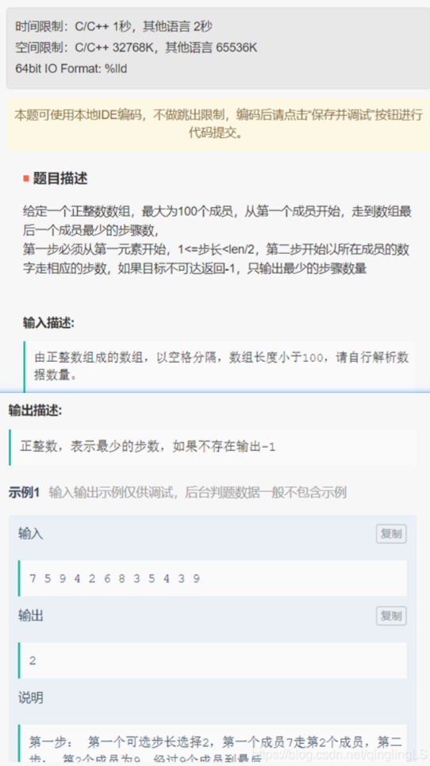
55.【拼接URL】
题目描述：
给定一个url前缀和url后缀,通过,分割 需要将其连接为一个完整的url
如果前缀结尾和后缀开头都没有/，需要自动补上/连接符
如果前缀结尾和后缀开头都为/，需要自动去重
约束：不用考虑前后缀URL不合法情况
输入描述：
url前缀(一个长度小于100的字符串) url后缀(一个长度小于100的字符串)
输出描述：
拼接后的url
示例
输入：
/acm,/bb
输出：
/acm/bb
输入：
/abc/,/bcd
输出：
/abc/bcd
输入：
/acd,bef
输出：
/acd/bef
输入：
,
输出：
/
56.【矩阵最大值】
题目描述：
给定一个仅包含0和1的N*N二维矩阵，请计算二维矩阵的最大值，计算规则如下：
每行元素按下标顺序组成一个二进制数（下标越大越排在低位），二进制数的值就是该行的值。矩阵各行值之和为矩阵的值。
允许通过向左或向右整体循环移动每行元素来改变各元素在行中的位置。 比如：
[1,0,1,1,1]向右整体循环移动2位变为[1,1,1,0,1]，二进制数为11101，值为29。
[1,0,1,1,1]向左整体循环移动2位变为[1,1,1,1,0]，二进制数为11110，值为30。
输入描述:
输入的第一行为正整数，记录了N的大小，0 < N <= 20。
输入的第2到N+1行为二维矩阵信息，行内元素半角逗号分隔。
输出描述：
矩阵的最大值。
示例 1：
输入
5
1,0,0,0,1
0,0,0,1,1
0,1,0,1,0
1,0,0,1,1
1,0,1,0,1
1
2
3
4
5
6
输出
122
1
说明：
第一行向右整体循环移动1位，得到本行的最大值[1,1,0,0,0]，二进制为11000，十进制为24。
第二行向右整体循环移动2位，得到本行的最大值[1,1,0,0,0]，二进制为11000，十进制为24。
第三行向左整体循环移动1位，得到本行的最大值[1,0,1,0,0]，二进制为10100，十进制为20。
第四行向右整体循环移动2位，得到本行的最大值[1,1,1,0,0]，二进制为11100，十进制为28。
第五行向右整体循环移动1位，得到本行的最大值[1,1,0,1,0]，二进制为11010，十进制为26。
总和为24+24+20+28+26=122。
57.【最小传输时延】
问题描述：
有M*N的节点矩阵，每个节点可以向8个方向（上、下、左、右及四个斜线方向）转发数据包，每个节点转发时会消耗固定时延，连续两个相同时延可以减少一个时延值（即当有K个相同时延的节点连续转发时可以减少K- 1个时延值），求左上角（0，0）开始转发数据包到右下角（M-1，N- 1）并转发出的最短时延。
输入：
第一行两个数字，M、N，接下来有M行，每行有N个数据，表述M* N的矩阵。
输出：
最短时延值。
示例1：
3 3
0 2 2
1 2 1
2 2 1
输出：3
示例2：
3 3
2 2 2
2 2 2
2 2 2
输出：4（2 + 2 + 2 -（3-1))
58.【高效的任务规划】
题目描述：
你有 n 台机器编号为 1~n，每台都需要完成完成一项工作，机器经过配置后都能完成独立完成一项工作。假设第 i 台机器你需要花 B 分钟进行设置，然后开始运行，J 分钟后完成任务。现在，你需要选择布置工作的顺序，使得用最短的时间完成所有工作。注意，不能同时对两台进行配置，但配置完成的机器们可以同时执行他们各自的工作。
输入描述：
第一行输入代表总共有 M 组任务数据（1 < M <= 10）。
每组数据第一行为一个整数指定机器的数量 N（0 < N <= 1000）。随后的 N 行每行两个整数，第一个表示B（0 <= B <= 10000），第二个表示 J（0 <= J <= 10000）。
每组数据连续输入，不会用空行分隔。各组任务单独计时。
输出描述：
对于每组任务，输出最短完成时间，且每组的结果独占一行。例如，两组任务就应该有两行输出。
示例 1：
输入
1
1
2 2
输出
4
59.【组成最大数】
【题目描述】
给定一组非负整数，重新排列它们的顺序使之组成一个最大的整数。
【示例】
输入: [10,2]
输出: 210
输入: [3,30,34,5,9]
输出: 9534330
60.【矩形相交的面积】
【矩形相交的面积】在坐标系中，给定3个矩形，求相交区域的面积。
输入描述:
3行输入分别为3个矩形的位置，分别代表“左上角x坐标”，“左上角y坐标”，“矩形宽”，“矩形高” -1000<=x,y<1000
输出描述:
输出3个矩形相交的面积，不相交的输出0
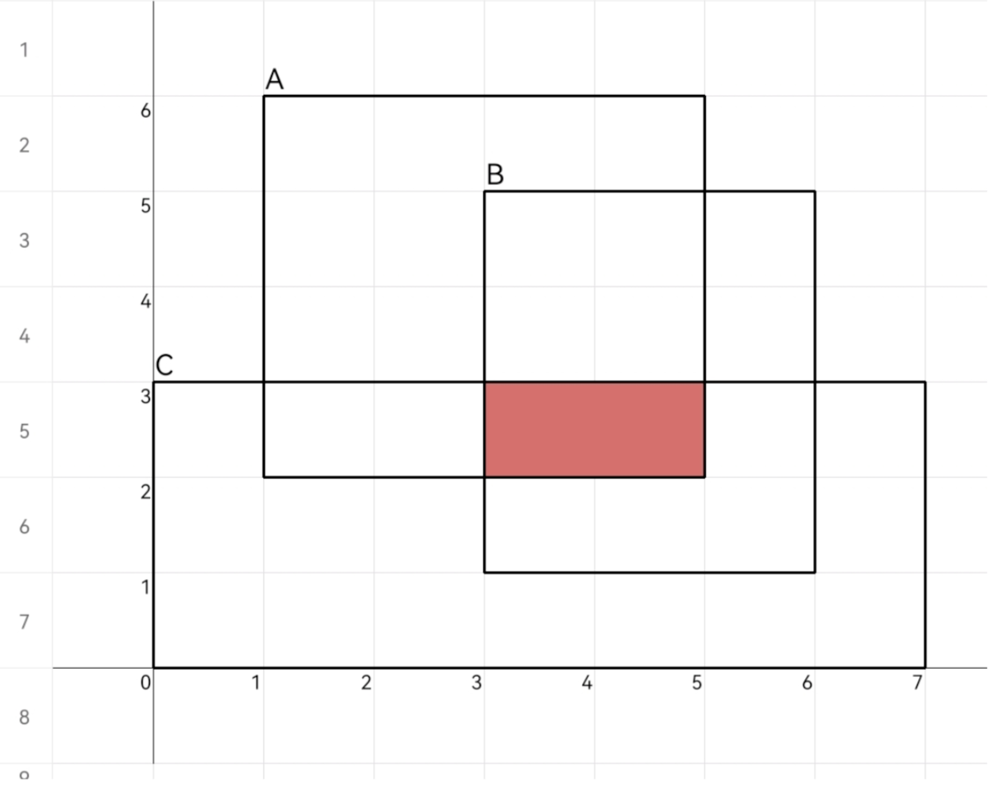
示例:
输入
1 6 4 4
3 5 3 4
0 3 7 3
输出
2
61.【实现一个简易内存池】
题目描述
请实现一个简易内存池,根据请求命令完成内存分配和释放。
内存池支持两种操作命令，REQUEST和RELEASE，其格式为：
REQUEST=请求的内存大小 表示请求分配指定大小内存，如果分配成功，返回分配到的内存首地址；如果内存不足，或指定的大小为0，则输出error。
RELEASE=释放的内存首地址 表示释放掉之前分配的内存，释放成功无需输出，如果释放不存在的首地址则输出error。
注意：
1.内存池总大小为100字节。
2.内存池地址分配必须是连续内存，并优先从低地址分配。
3.内存释放后可被再次分配，已释放的内存在空闲时不能被二次释放。
4.不会释放已申请的内存块的中间地址。
5.释放操作只是针对首地址所对应的单个内存块进行操作，不会影响其它内存块。
解答要求
时间限制: 1000ms, 内存限制: 256MB
首行为整数 N , 表示操作命令的个数，取值范围：0 < N <= 100。
接下来的N行, 每行将给出一个操作命令，操作命令和参数之间用 “=”分割。
输入输出
样例1：
2
REQUEST=10
REQUEST=20
输出样例1：
0
10
1.
2.
3.
4.
5.
6.
7.
样例2：
5
REQUEST=10
REQUEST=20
RELEASE=0
REQUEST=20
REQUEST=10
输出样例2：
0
10
30
0
1.
2.
3.
4.
5.
6.
7.
8.
9.
10.
11.
12.
提示说明：
第一条指令，申请地址0~9的10个字节内存，返回首地址0
第二条指令，申请地址10~29的20字节内存，返回首地址10
第三条指令，释放首地址为0的内存申请，0~9地址内存被释放，变为空闲，释放成功，无需输出
第四条指令，申请20字节内存，09地址内存连续空间不足20字节，往后查找到3049地址，返回首地址30
第五条指令，申请10字节，0~9地址内存空间足够，返回首地址0
62.【工厂流水线调度】
题目描述：
一个工厂有m条流水线，来并行完成n个独立的作业，该工厂设置了一个调度系统，在安排作业时，总是优先执行处理时间最短的作业。
现给定流水线个数m，需要完成的作业数n, 每个作业的处理时间分别为t1,t2…tn。请你编程计算处理完所有作业的耗时为多少？
当n>m时，首先处理时间短的m个作业进入流水线，其他的等待，当某个作业完成时，依次从剩余作业中取处理时间最短的进入处理。
输入描述：
第一行为2个整数（采用空格分隔），分别表示流水线个数m和作业数n
第二行输入n个整数（采用空格分隔），表示每个作业的处理时长t1,t2…tn。
0< m,n<100
0<t1,t2…tn<100
注：保证输入都是合法的。
输出描述：
输出处理完所有作业的总时长
示例
输入：
3 5
8 4 3 2 10
输出：
13
说明：
先安排时间为2、3、4的3个作业。
第一条流水线先完成作业，然后调度剩余时间最短的作业8。
第二条流水线完成作业，然后调度剩余时间最短的作业10。
总工耗时就是第二条流水线完成作业的时间13（3+10）。
63.【快递运输】
【题目描述】
一辆运送快递的货车，运送的快递均放在大小不等的长方体快递盒中，为了能够装载更多的快递，同时不能让货车超载，需要计算最多能装多少个快递。
快递的体积不受限制，快递数最多1000个，货车载重最大50000。
输入描述
第一行输入每个快递的重量，用英文逗号分隔，如：5,10,2,11
第二行输入货车的载重量，如：20
不需要考虑异常输入
输出描述
输出最多能装多少个快递，如：3
【示例】
输入：
5,10,2,11
20
输出：
3
说明：
货车的载重量为20，最多只能放三个快递5、10、2，因此输出3
64.【目录删除】
要求：1s 262144k
某文件系统中有N个目录，每个目录都一个独一无二的ID。每个目录只有一个父目录，但每个父目录下可以有零个或者多个子目录，目录结构呈树状结构。
假设，根目录的ID为0，且根目录没有父目录，其他所有目录的ID用唯一的正整数表示，并统一编号。
现给定目录ID和其父目录ID的对应父子关系表[子目录ID，父目录ID]，以及一个待删除的目录ID，请计算并返回一个ID序列，表示因为删除指定目录后剩下的所有目录，返回的ID序列以递增序输出。
注意：
1、被删除的目录或文件编号一定在输入的ID序列中；
2、当一个目录删除时，它所有的子目录都会被删除。
输入描述: 输入的第一行为父子关系表的长度m；接下来的m行为m个父子关系对；最后一行为待删除的ID。序列中的元素以空格分割，参见样例。
输出描述: 输出一个序列，表示因为删除指定目录后，剩余的目录ID。
示例1
输入
5
8 6
10 8
6 0
20 8
2 6
8
输出
2 6
1
2
3
4
5
6
7
8
9
10
11
12
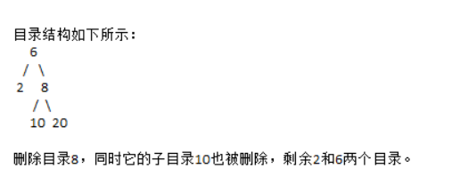
65.【任务调度问题】
操作系统任务调度问题。操作系统任务分为系统任务和用户任务两种。其中，系统任务的优先级 < 50，用户任务的优先级 >= 50且 <= 255。优先级大于255的为非法任务，应予以剔除。现有一任务队列task[]，长度为n，task中的元素值表示任务的优先级，数值越小，优先级越 高。函数scheduler实现如下功能，将task[] 中的任务按照系统任务、用户任务依次存放到 system_task[] 数组和 user_task[] 数组中（数组中元素的值是任务在task[] 数组中的下标），并且优先级高的任务排在前面，数组元素为-1表示结束。
例如：task[] = {0, 30, 155, 1, 80, 300, 170, 40, 99} system_task[] = {0, 3, 1, 7, -1} user_task[] = {4, 8, 2, 6, -1}
函数接口 void scheduler(int task[], int n, int system_task[], int user_task[])
66.【英文输入法单词联想】
题目描述：
主管期望你来实现英文输入法单词联想功能。
需求如下：依据用户输入的单词前缀， 从已输入的英文语句中联想出用户想输入的单词， 按字典序输出联想到的单词序列， 如果联想不到， 请输出用户输入的单词前缀。
注意：
英文单词联想时区分大小写缩略形式如"don’t" 判定为两个单词 "don"和 "t"输出的单词序列不能有重复单词且只能是英文单词，不能有标点符号。
输入描述：
输入两行
首行输入一段由英文单词word和标点构成的语句str
接下来一行为一个英文单词前缀pre
0 < word.length() <= 20
0 < str.length <= 10000
0 < pre <=20
输出描述：
输出符合要求的单词序列或单词前缀，存在多个时，单词之间以单个空格分割
示例
输入：
I love you
He
输出：
He
说明：
用户已输入单词语句"I love you",中提炼出"I",“love”,“you"三个单词 接下来用户输入"He” ，从已经输入信息中无法联想到符合要求的单词，所以输出用户输入的单词前缀。
输入：
The furthest distance in the world,Is not between life and death,But when I stand in front or you,Yet you don’t know that I love you.
f
输出：
front furthest
67.【求解连续数列】
【求解连续数列】已知连续正整数数列{K}=K1,K2,K3…Ki的各个数相加之和为S，i=N (0<S<100000, 0<N<100000), 求此数列K。
输⼊描述：
输⼊包含两个参数，1）连续正整数数列和S，2）数列⾥数的个数N。
输出描述：
如果有解输出数列K，如果⽆解输出-1
示例1：
输⼊
525 6
输出：
85 86 87 88 89 90
68.【区间交集】
【区间交集】给定一组闭区间，其中部分区间存在交集。任意两个给定区间的交集，称为公共区间(如:[1,2],[2,3]的公共区间为[2,2]，[3,5],[3,6]的公共区间为
[3,5])。公共区间之间 若存在交集，则需要合并(如:[1,3],[3,5]区间存在交集[3,3]，需合并为[1,5])。按升序排列 输出合并后的区间列表。
输入描述: 一组区间列表，区间数为 N: 0<=N<=1000;区间元素为 X: -10000<=X<=10000。
输出描述: 升序排列的合并区间列表
备注:
1、区间元素均为数字，不考虑字母、符号等异常输入。
2、单个区间认定为无公共区间。
示例:
输入
[[0, 3], [1, 3], [3, 5], [3, 6]]
输出
[[1, 5]]
69.【玩牌高手】
标题：玩牌高手 | 时间限制：1秒 | 内存限制：32768K | 语言限制：不限
给定一个长度为n的整型数组，表示一个选手在n轮内可选择的牌面分数。选手基于规则选牌，请计算所有轮结束后其可以获得的最高总分数。选择规则如下：
1、在每轮里选手可以选择获取该轮牌面，则其总分数加上该轮牌面分数，为其新的总分数。
2、选手也可不选择本轮牌面直接跳到下一轮，此时将当前总分数还原为3轮前的总分数，若当前轮次小于等于3（即在第1、2、3轮选择跳过轮次），则总分数置为0。
3、选手的初始总分数为0，且必须依次参加每一轮。
输入描述:
第一行为一个小写逗号分割的字符串，表示n轮的牌面分数，1<= n <=20。
分数值为整数，-100 <= 分数值 <= 100。
不考虑格式问题。
输出描述:
所有轮结束后选手获得的最高总分数。
示例1
输入
1,-5,-6,4,3,6,-2
输出
11
说明
总共有7轮牌面。
第一轮选择该轮牌面，总分数为1。
第二轮不选择该轮牌面，总分数还原为0。
第三轮不选择该轮牌面，总分数还原为0。
第四轮选择该轮牌面，总分数为4。
第五轮选择该轮牌面，总分数为7。
第六轮选择该轮牌面，总分数为13。
第七轮如果不选择该轮牌面，则总分数还原到3轮1前分数，即第四轮的总分数4，如果选择该轮牌面，总分数为11，所以选择该轮牌面。
因此，最终的最高总分为11。
70.【根据日志时间先后顺序对日志进行排序】
运维工程师采集到某产品线网运行一天产生的日志n条
现需根据日志时间先后顺序对日志进行排序
日志时间格式为H:M:S.N
H表示小时(0~23)
M表示分钟(0~59)
S表示秒(0~59)
N表示毫秒(0~999)
时间可能并没有补全
也就是说
01:01:01.001也可能表示为1:1:1.1
输入描述
第一行输入一个整数n表示日志条数
1<=n<=100000
接下来n行输入n个时间
输出描述
按时间升序排序之后的时间
如果有两个时间表示的时间相同
则保持输入顺序
示例：
输入：
2
01:41:8.9
1:1:09.211
输出
1:1:09.211
01:41:8.9
示例
输入
3
23:41:08.023
1:1:09.211
08:01:22.0
输出
1:1:09.211
08:01:22.0
23:41:08.023
示例
输入
2
22:41:08.023
22:41:08.23
输出
22:41:08.023
22:41:08.23
时间相同保持输入顺序
71.【分月饼】
题目描述
中秋节，公司分月饼，m个员工，买了n个月饼，m<=n，每个员工至少分1个月饼，但可以分多个，单人份到最多月饼的个数为Max1，单人分到第二多月饼的个数是Max2，Max1-Max2<=3,。同理，单人分到第n-1多月饼的个数是Max(n-1)，单人分到第n多月饼的个数是Max(n)，Max(n-1)-Max(n)<=3。请问有多少种分月饼的方法？
输入描述：
第一行输入m n，表示m个员工，n个月饼，m<=n
1
输出描述：
输出有多少种月饼分法
1
解题思路：
把n个月饼当做一个线段，划分m次。
假设，开始划分一次，划分了a个月饼，则此时m=m-1，n=n-a；
再次划分时，划分了b个月饼，则此时m=m-1，n=n-b；
…
最后第n次划分时，划分c个月饼，m=m-1=0，n=n-c=0；
71.【滑动窗口最大值】
【编程题目 | 100分】滑动窗口最大值 [ 2022 Q1 考试题 ]
本题可使用本地IDE编码，不能使用本地已有代码。无跳出限制，编码后请点击"保存并提交"按钮进行代码提交。
题目描述：
有一个N个整数的数组，和一个长度为M的窗口，窗口从数组内的第一个数开始滑动直到窗口不能滑动为止， 每次窗口滑动产生一个窗口和（窗口内所有数的和），求窗口滑动产生的所有窗口和的最大值。
输入描述：
第一行输入一个正整数N，表示整数个数。（0<N<100000）
第二行输入N个整数，整数的取值范围为[-100,100]。
第三行输入一个正整数M，M代表窗口的大小，M<=100000，且M<=N。
输出描述：
窗口滑动产生所有窗口和的最大值。
示例 1 输入输出示例仅供调试，后台判题数据一般不包含示例
输入
6
12 10 20 30 15 23
3
1
2
3
输出
68
1
思路分析：
这与leetcode的滑动窗口最大值不同，那个需要用单调栈来实现。计算每个窗口的最大值。
这道题可以参考单调栈实现方法，用来统计滑动窗口的最大值。也可以使用双指针来实现。
72.【wave数组找字母游戏】
题目描述：
Word Maze 是一个网络小游戏，你需要找到以字母标注的食物，但要求以给定单词字母的顺序吃掉。如上图，假设给定单词if，你必须先吃掉i然后才能吃掉f。
但现在你的任务可没有这么简单，你现在处于一个迷宫Maze（n×m的矩阵）当中，里面到处都是以字母标注的食物，但你只能吃掉能连成给定单词W的食物。
- 1
- 2
，指定W为“SOLO”，则在地图中红色标注了单词“SOLO”。
运行时间限制: 无限制
内存限制: 无限制
输入第一行包含两个整数n、m(0
如果能在地图中连成给定的单词，则输出“YES”，否则输出“NO”。注意：每个字母只能用一次。
5 5
SOLO
CPUCY
EKLQH
CRSOL
EKLQO
PGRBC
YES
- 这道题同样对时间和空间没有要求，所以采用暴力破解
- 遍历二位数组，寻找对应的单词的字母，找到了要set=‘’，然后conninue
73.【最小数字】
编程题目 | 100分】最小数字 [ 100 / 中等 ]
最小数字
题目描述：
给定一个整型数组，请从该数组中选择3个元素组成最小数字并输出（如果数组长度小于3，则选择数组中所有元素来组成最小数字）。
输入描述：
一行用半角逗号分割的字符串记录的整型数组，0 < 数组长度 <= 100，0 < 整数的取值范围 <= 10000。
输出描述：
由3个元素组成的最小数字，如果数组长度小于3，则选择数组中所有元素来组成最小数字。
示例 1：
输入
21,30,62,5,31
1
输出
21305
1
说明
数组长度超过3，需要选3个元素组成最小数字，21305由21,30,5三个元素组成的数字，为所有组合中最小的数字
示例 2：
输入
5,21
1
输出
215
1
说明
数组长度小于3，选择所有元素组成最小值，215为最小值
74.【解密犯罪时间】
解密犯罪时间 | 时间限制：1秒 | 内存限制：262144K | 语言限制：不限
警察在侦破一个案件时，得到了线人给出的可能犯罪时间，形如 “HH:MM” 表示的时刻。
根据警察和线人的约定，为了隐蔽，该时间是修改过的，解密规则为：利用当前出现过的数字，构造下一个距离当前时间最近的时刻，则该时间为可能的犯罪时间。每个出现数字都可以被无限次使用。"
"输入描述:
形如HH:SS的字符串，表示原始输入
输出描述:
形如HH:SS的字符串，表示推理出来的犯罪时间
示例1
输入
18:52
输出
18:55
说明
利用数字1, 8, 5, 2构造出来的最近时刻是18:55，是3分钟之后。结果不是18:51因为这个时刻是18小时52分钟之后。
示例2
输入
23:59
输出
22:22
说明
利用数字2, 3, 5, 9构造出来的最近时刻是22:22。 答案一定是第二天的某一时刻，所以选择可构造的最小时刻为犯罪时间。
备注:
可以保证线人给定的字符串一定是合法的。例如，“01:35” 和 “11:08” 是合法的，“1:35” 和 “11:8” 是不合法的。
最近的时刻有可能在第二天
75.【任务最优调度】
【任务最优调度】给定一个正整数组表示待系统执行的任务列表，数组的每一个元素代表一个任务，元素的值表示该任务的类型。请计算执行完所有任务所需的最短时间。
任务执行规则如下:
1、任务可以按任意顺序执行，且每个任务执行耗时间均为1个时间单位。
2、两个同类型的任务之间必须有长度为N个单位的冷却时间，比如N为2时，在时间K执行了类型3的任务，那么K+1和K+2两个时间不能执行类型3任务。
3、系统在任何一个单位时间内都可以执行一个任务，或者等待状态。说明:数组最大长度为1000，速度最大值1000。
输入描述:
第一行记录一个用半角逗号分隔的数组，数组长度不超过1000，数组元素的值不超过1000第二行记录任务冷却时间，N为正整数，N<=100。
输出描述:
输出为执行完所有任务所需的最短时间。
示例:
输入
2,2,2,3
2
输出
7
76.【最大值】
给定一组非负整数，重新排列它们的顺序使之组成一个最大的整数。(LeetCode-JAVA)
示例 1:
输入: [10,2]
输出: 210
示例 2:
输入: [3,30,34,5,9]
输出: 9534330
说明: 输出结果可能非常大，所以你需要返回一个字符串而不是整数。
77.【按身高和体重排队】
题目描述：
某学校举行运动会,学生们按编号（1、2、3…n)进行标识现需要按照身高由低到高排列，对身高相同的人，按体重由轻到重排列，对于身高体重都相同的人，维持原有的编号顺序关系。
请输出排列后的学生编号
输入描述：
两个序列，每个序列由N个正整数组成，(0<n<=100)。
第一个序列中的数值代表身高
第二个序列中的数值代表体重
输出描述：
排列结果，每个数值都是原始序列中的学生编号，编号从1开始，身高从低到高，身高相同体重从轻到重，体重相同维持原来顺序。
示例：
输入：
4
100 100 120 130
40 30 60 50
输出：
2134
输入：
3
90 110 90
45 60 45
输出：
132
78.【寻找身高相近的小朋友】
小明今年升学到了小学1年纪
来到新班级后，发现其他小朋友身高参差不齐
然后就想基于各小朋友和自己的身高差，对他们进行排序
请帮他实现排序
输入描述
第一行为正整数 h和n
0<h<200 为小明的身高
0<n<50 为新班级其他小朋友个数
第二行为n各正整数
h1 ~ hn分别是其他小朋友的身高
取值范围0<hi<200
且n个正整数各不相同
| 1 2 3 4 5 6 7 8 9 10 11 12 13 14 15 16 |
|
79.【二叉树中序遍历输出】
题目描述
根据给定的二叉树结构描述字符串，输出该二叉树按照中序遍历结果字符串。中序遍历顺序为:左子树，根结点，右子树。
输入描述
由大小写字母、左右大括号、逗号组成的字符串:
1、字母代表一个节点值，左右括号内包含该节点的子节点。
2、左右子节点使用逗号分隔，逗号前为空则表示左子节点为空,没有逗号则表示右子节点
为空。
3、二叉树节点数最大不超过100。
注:输入字符串格式是正确的，无需考虑格式错误的情况。
输出描述
输出一个字符串，为二叉树中序遍历各节点值的拼接结果。
示例：
输入：a{b{d, e{g,h{,I}}},c{f}｝
输出：dbgehiafc
80.【第k个排列】
题目
【第k个排列】给定参数n，从1到n会有n个整数：1,2，3，...,n，这n个数字共有n！种排列。
按大小顺序升序列出所有排列情况，并一一标记，当n=3时，所有排列如下：
"123"
"132"
"213"
"231"
"312"
"321"
给定n和k，返回第k个排列。
输入描述：
输入两行，第一行为n，第二行为k，给定n的范围是[1，9]，给定k的范围是[1，n!]。
输出描述：
输出排在第k位置的数字。
示例1：
输入：
3
3
输出：
213
81.【求数组中最大n个数和最小n个数的和】
题目描述
输入一个数 M ，表示数组中有 M 个数
输入 M 个数。
输入 n
求数组 M 中，去除重复值后，最大 n 个数和最小 n 个数的和
注意：最大和最小的数中不能有重复值，否则输出 -1
样例输入
5
3 3 2 4 2
2
样例输出
-1
说明
去除重复后最大的2个数为[4,3]，最小的2个数为[2,3]；有相同值，所以返回-1
样例输入
5
3 3 2 4 2
1
样例输出
6
说明
去除重复后最大的1个数为[4]，最小的1个数为[2]；没有相同值，返回6
82.【喊7的次数重排】
题目描述
喊7是一个传统的聚会游戏，N个人围成一圈，按顺时针从1到N编号。编号为1的人从1开始喊数，下一个人喊的数字为上一个人的数字加1，但是当数字是7的倍数或者数字本身含有7的话，要喊"过"。现给定一个长度为N的数组，存储了打乱顺序的每个人喊"过"的次数，请把它还原成正确的顺序，即数组的第i个元素存储编号i的人喊"过"的次数。
输入
输入为一行，为空格分隔的喊"过"的次数
样例输入
0 1 0
样例输出
1 0 0
说明
一共只有一次喊"过"，那只会发生在需要喊 7 时，按顺序，编号为 1 的人会遇到 7 ，故输出 1 0 0 。注意，结束时的K不一定是 7 ，也可以是 8、9 等，喊过的次数都是 1 0 0 。
83.【二叉树用数组来存储】
二叉树也可以用数组来存储
给定一个数组
树的根节点的值储存在下标1
对于储存在下标n的节点，
他的左子节点和右子节点分别储存在下标2*n和2*n+1
并且我们用-1代表一个节点为空
给定一个数组存储的二叉树
试求从根节点到最小的叶子节点的路径
路径由节点的值组成
输入描述
输入一行为数组的内容
数组的每个元素都是正整数，元素间用空格分割
注意第一个元素即为根节点的值
即数组的第n元素对应下标n
下标0在树的表示中没有使用
所以我们省略了
输入的树最多为7层
输出描述
输出从根节点到最小叶子节点的路径上各个节点的值
由空格分割
用例保证最小叶子节点只有一个
例子
输入
3 5 7 -1 -1 2 4
输出
3 7 2
例子
输入
5 9 8 -1 -1 7 -1 -1 -1 -1 -1 6
输出
5 8 7 6
84.【最大子矩阵和】
求一个M*N的矩阵的最大子矩阵和。
比如在如下这个矩阵中：
0 -2 -7 0
9 2 -6 2
-4 1 -4 1
-1 8 0 -2
拥有最大和的子矩阵为：
9 2
-4 1
-1 8
其和为15。
85.【磁盘容量排序】
磁盘的容量单位常用的有M，G，T这三个等级，关系为 1T = 1024G、1G = 1024M，如样例所示先输入磁盘的个数，再依次输入磁盘的容量大小，然后按照从小到大的顺序对磁盘容量进行排序并输出。
样例：
输入：
3
1G
2G
1024
输出：(容量相等，保留原来的相对位置)
1G
1024
2G
86.【一种字符串压缩表示的解压】
有一种简易压缩算法：针对全部由小写英文字母组成的字符串，将其中连续超过两个相同字母的部分压缩为连续个数加该字母，其他部分保持原样不变。
例如：字符串“aaabbccccd”经过压缩成为字符串“3abb4cd”。请您编写解压函数，根据输入的字符串，判断其是否为合法压缩过的字符串，若输入合法则输出解压缩后的字符串，否则输出字符串“!error”来报告错误。
输入描述：
若判断输入为合法的经过经过压缩后的字符串，则输出压缩前的字符串；若输入不合法，则输出字符串“!error”。
示例1：
输入
4dff
输出
ddddff
87.【最大花费金额】
双十一众多商品进行打折销售，小明想购买自己心仪的一些物品，但由于受购买资金限制，所以他决定从众多心仪商品中购买三件，而且想尽可能的花完资金，现在请你设计一个程序帮助小明计算尽可能花费的最大资金数额。
输入描述:
- 输入第一行为一维整型数组M，数组长度小于100，数组元素记录单个商品的价格，单个商品价格小于1000。
- 输入第二行为购买资金的额度R，R小于100000。
输出描述:
- 输出为满足上述条件的最大花费额度。
注意：
- 如果不存在满足上述条件的商品，请返回-1。
示例1
输入
23,26,36,27
78
输出
76
说明
金额23、26和27相加得到76，而且最接近且小于输入金额78
示例2
输入
23,30,40
26
输出
-1
说明
- 因为输入的商品，无法组合出来满足三件之和小于26.故返回-1
备注:
- 输入格式是正确的，无需考虑格式错误的情况。
88.【最远足迹】
题目描述：
某探险队负责对地下洞穴进行探险。 探险队成员在进行探险任务时，随身携带的记录器会不定期地记录自身的坐标，但在记录的间隙中也会记录其他数据。 探索工作结束后，探险队需要获取到某成员在探险过程中相对于探险队总部的最远的足迹位置。
仪器记录坐标时，坐标的数据格式为(x,y)，如(1,2)、(100,200)，其中0<x<1000，0<y<1000。同时存在非法坐标，如(01,1)、(1,01)，(0,100)属于非法坐标。
设定探险队总部的坐标为(0,0)，某位置相对总部的距离为：x * x+ y * y。
若两个座标的相对总部的距离相同，则第一次到达的坐标为最远的足迹。
若记录仪中的坐标都不合法，输出总部坐标（0,0）。 备注：不需要考虑双层括号嵌套的情况，比如sfsdfsd((1,2))。
输入描述:
字符串，表示记录仪中的数据。
如：ferga13fdsf3(100,200)f2r3rfasf(300,400)
输出描述：
字符串，表示最远足迹到达的坐标。
如： (300,400)
示例 1：
输入
ferg(3,10)a13fdsf3(3,4)f2r3rfasf(5,10)
1
输出
(5,10)
1
说明
记录仪中的合法坐标有3个： (3,10)， (3,4)， (5,10)，其中(5,10)是相距总部最远的坐标， 输出(5,10)。
示例 2：
输入
asfefaweawfaw(0,1)fe
1
输出
(0,0)
1
说明
记录仪中的坐标都不合法，输出总部坐标(0,0)
89.【计算面积】
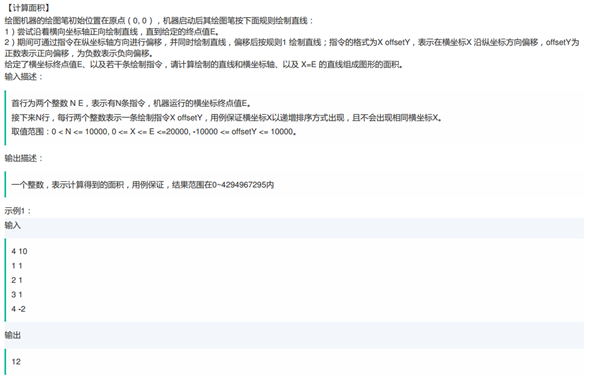
[计算面积]
绘图机器的绘图笔初始位i在原点(0.0)。 机器启动后其绘图笔按下面规则绘制直线:
1 )尝试沿着横向坐标轴正向绘制直线，直到给定的终点值E,
2 )期间可通过指令在纵坐标轴方向进行偏移。井同时恰制直线，偏移后按规则1绘制直线;指令的格式为X oseYr。表示在横坐标X沿纵坐标方向偏移, ofset为正数表示正向偏移,为负数表示负向偏移。
给定了横坐标格点值E.以及若干条检制指令。请计算给制的直线和横坐标轴。以及X-E的直线组成图形的面积。
输入模述:
首行为两个整数NE。表示有N条指令。机器运行的横坐标終点值E.
接下来N行。每行两个整数表示-条给制指令x osorr。用例保证横坐标X以递增排序方式出现。且不会出现相同横坐标义。取值范围:0<Nc= 1000.00 X<= E <20000.10000 < oter如1000.
输出描述:
一个整数，表示计算得到的面积。用例保证.结果范围在0-4294967295内
示例1:
输入
4 10
11
21
31
4-2
输出
12
90.【最大矩阵和】
题目描述
给定一个二维整数矩阵，要在这个矩阵中选出一个子矩阵，使得这个子矩阵内所有的数字和尽量大，我们把这个子矩阵称为和最大子矩阵，子矩阵的选取原则是原矩阵中一块相互连续的矩形区域。
输入描述:
- 输入的第一行包含2个整数n, m(1 <= n, m <= 10)，表示一个n行m列的矩阵，下面有n行，每行有m个整数，同一行中，每2个数字之间有1个空格，最后一个数字后面没有空格，所有的数字的在[-1000, 1000]之间。
输出描述:
- 输出一行一个数字，表示选出的和最大子矩阵内所有的数字和。
示例1
输入
3 4
-3 5 -1 5
2 4 -2 4
-1 3 -1 3
输出
20
说明
一个3*4的矩阵中，后面3列的子矩阵求和加起来等于20，和最大。
91.【最长广播响应】
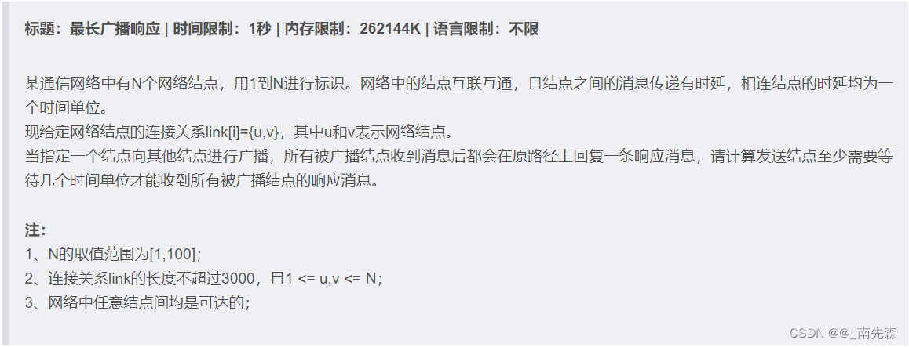
输入描述：
输入的第一行为两个正整数，分别表示网络结点的个数N，以及时延列表的长度I；
接下来的I行输入，表示结点间的连接关系列表；
最后一行的输入为一个正整数，表示指定的广播结点序号；
输出描述：
输出一个整数，表示发送结点接受到所有响应消息至少需要等待的是时长。
示例1：
输入
5 7
2 1
1 4
2 4
2 3
3 4
3 5
4 5
2
输出
4
92.【二叉树的广度优先遍历】
有一颗二叉树，每个节点由一个大写字母标识（最多26个节点）。现有两组字母，分别表示后序遍历（左孩子->右孩子>父节点）和中序遍历（左孩子-父节点-右孩子）的结果，请输出层次遍历的结果。
输入描述：
输入为两个字符串，分别是二叉树的后续遍历和中序遍历结果。
输出描述：
输出二叉树的层次遍历结果
示例1：
输入：
CBEFDA CBAEDF
输出：
ABDCEF
93.【求字符串中所有整数的最小和】
输入字符串s输出s中包含所有整数的最小和，
说明：
1字符串s只包含a~z,A~Z,+,-，
2.合法的整数包括正整数，一个或者多个0-9组成，如：0,2,3,002,102
3.负整数，负号开头，数字部分由一个或者多个0-9组成，如-2,-012,-23,-00023
输入描述：包含数字的字符串
输出描述：所有整数的最小和
示例：
输入：
bb1234aa
输出
10
输入：
bb12-34aa
输出：
-31
94.【求最多可以派出多少支团队】
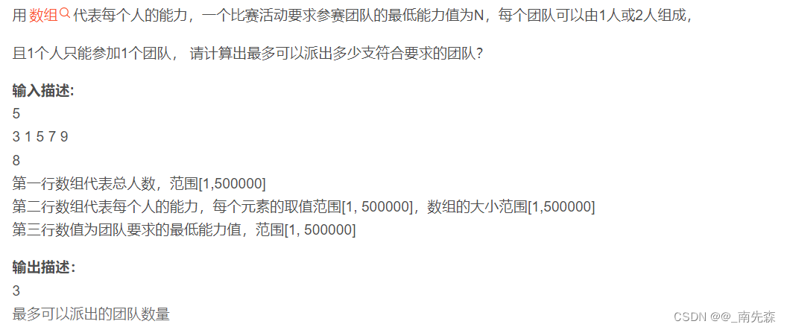
示例1：
输入：
5
3 1 5 7 9
8
输出：
3
95.【数字反转打印】
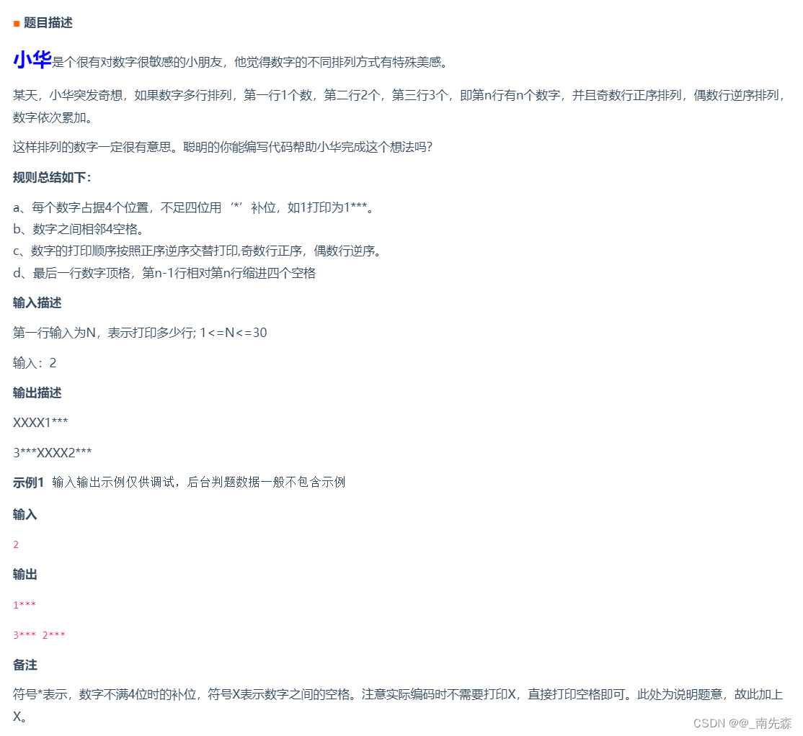
96【火锅】
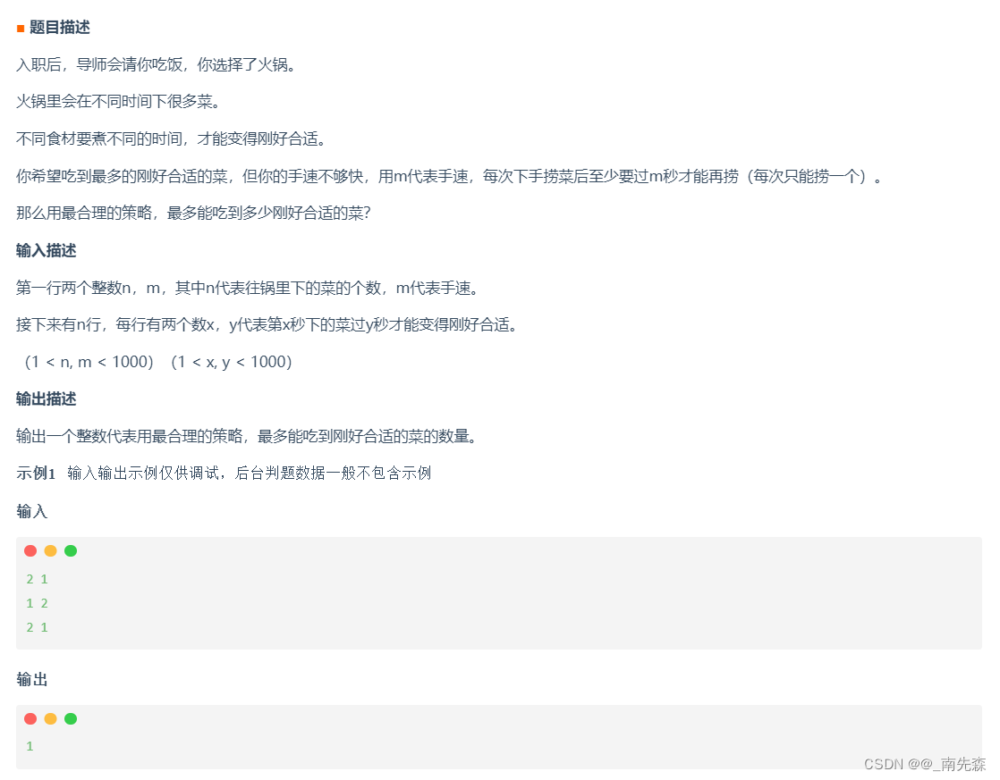
97.【找车位】
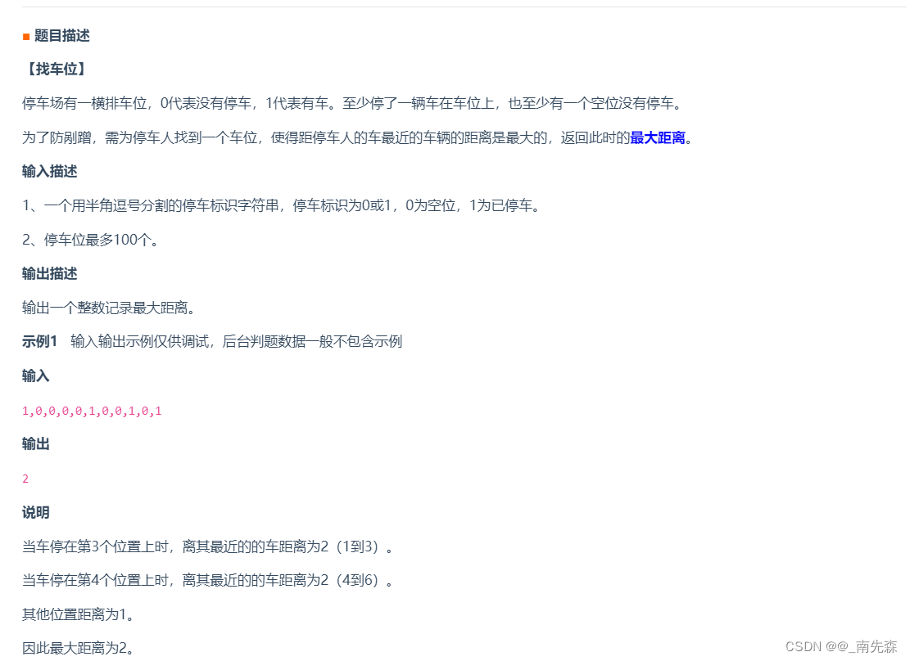
98.【敏感字段加密】
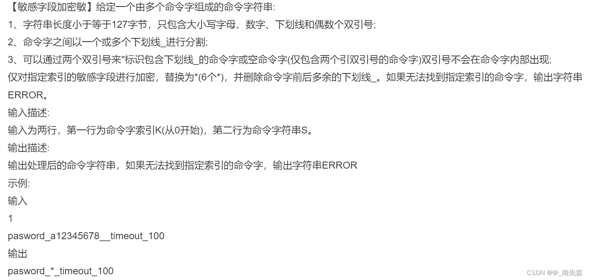
99.【字符串统计】
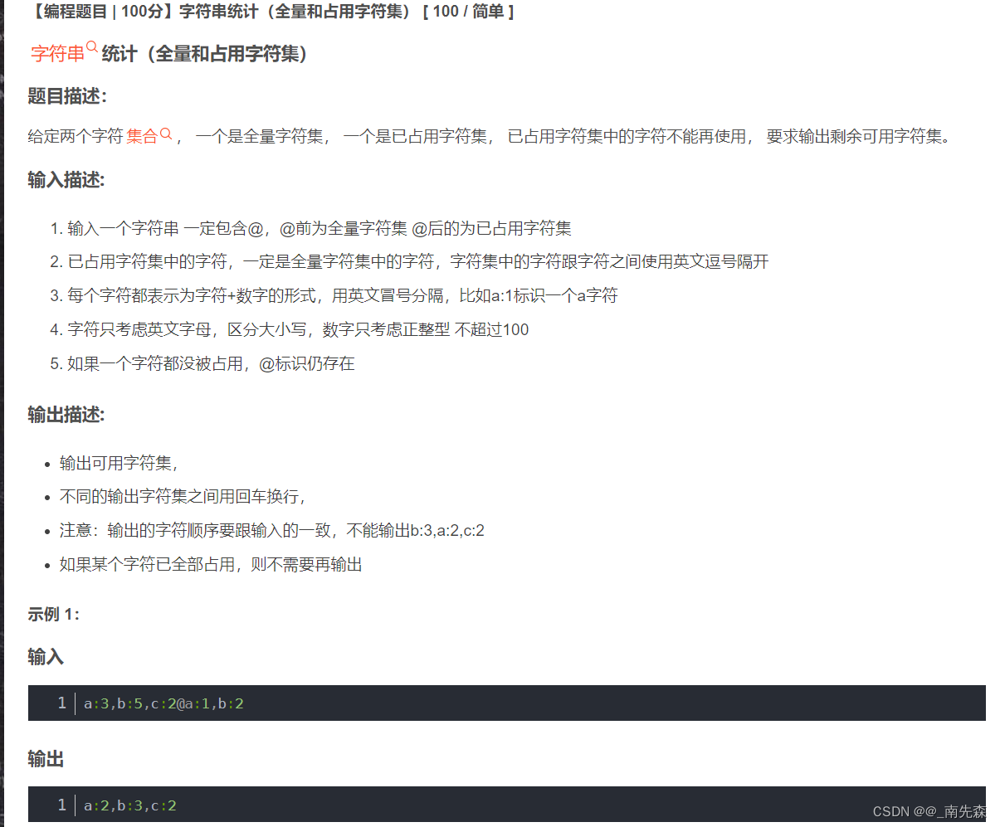
100.【九宫格按键】
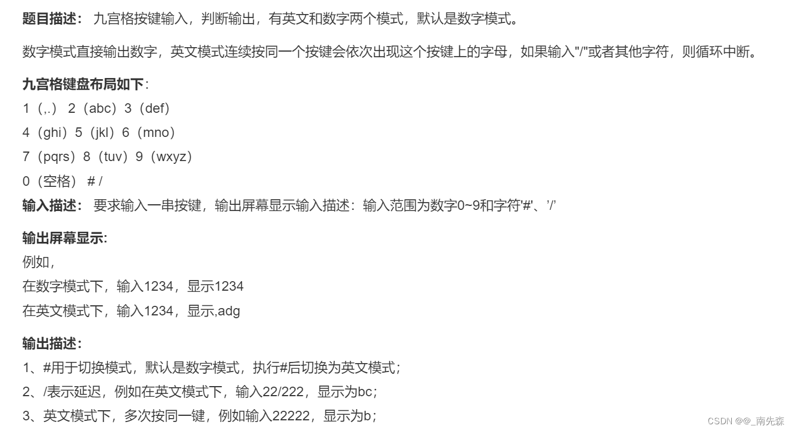
101.【报数游戏】
题目描述
100个人围成一圈，每个人有一个编码，编号从1开始到100.他们从1开始依次报数，报到为M的人自动退出圈圈，然后下一个人接着从1开始报数，直到剩余的人数小于M。请问最后剩余的人在原先的编号为多少？例如输入M=3时，输出为：“58，91”，输入M=4时，输出为： “34，45， 97”。
如果m小于等于1， 则输出“ERROR!”;
如果m大于等于100，则输出“ERROR!”；
示例
输入
3
输出
58，91
102.【叠积木】
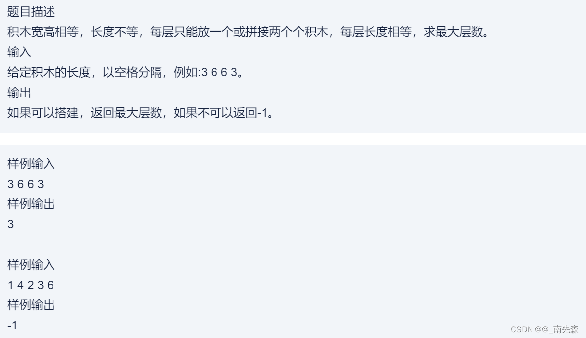
103.【工号不够用了怎么办】
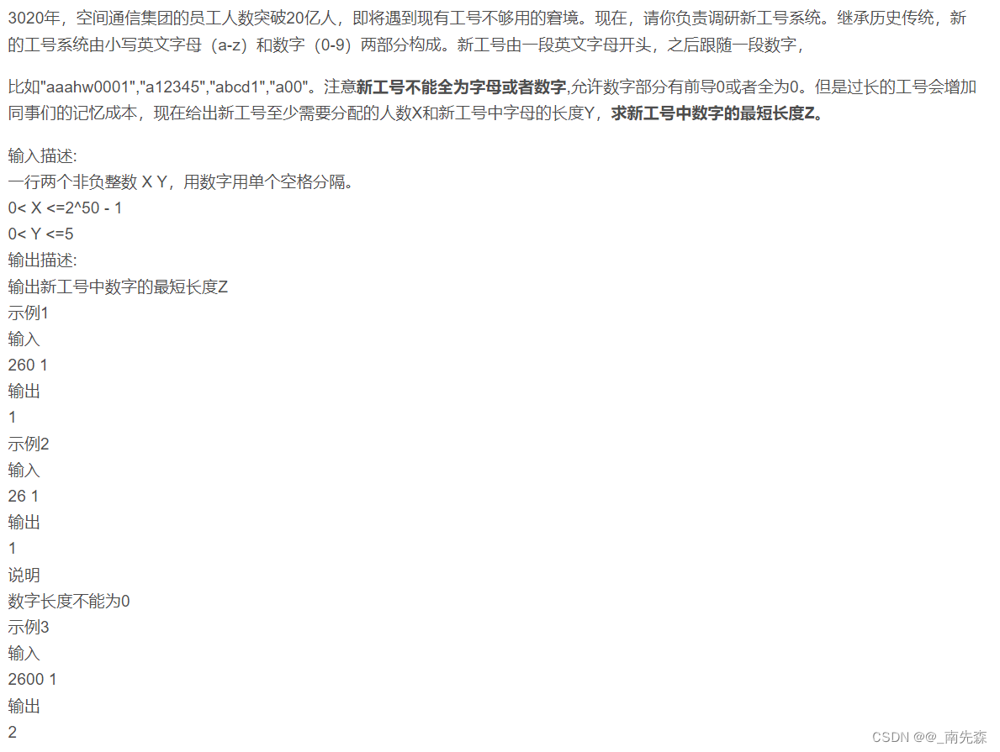
104.【构成的正方形数量】
【构成正方形数量】输入N个互不相同的二维整数坐标，求这N个坐标可以构成的正方形数量。(内积为零的的两个向量垂直)
输入描述:
第一行输入为N，N代表坐标数量，N为正整数。N<=100之后的K行输入为坐标xy以空格分隔，xy为整数，-10<=x,y<=10
输出描述:
输出可以构成的正方形数量。
示例1:输入
3
1 3
2 4
3 1
输出
0
105.【最长连续子序列】
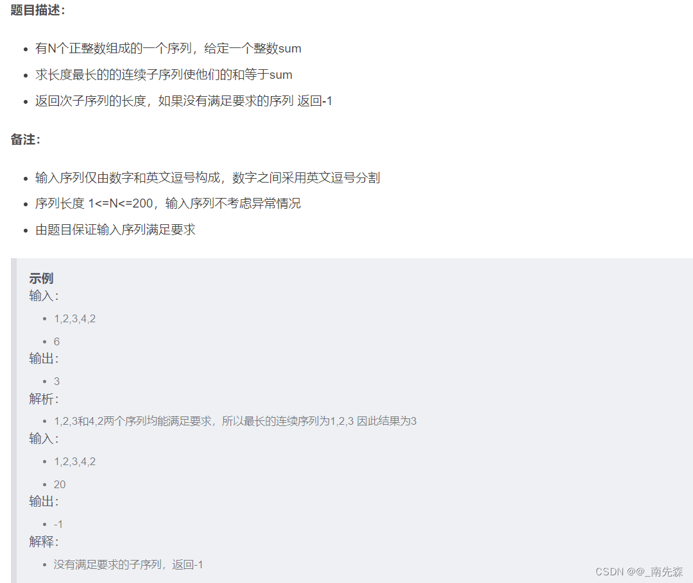
106.【根据某条件聚类最少交换次数】
给出数字K，请输出所有结果小于K的整数组合到一起的最少交换次数。
组合一起是指满足条件的数字相邻，不要求相邻后在数组中的位置。
数据范围
-100 <=K <= 100
-100 <= 数组中数值 <= 100
输入描述；
第一行输入数组：1 3 1 4 0
第二行输入K数值：2
输出描述；
第一行输出最少较好次数：1
备注：
小于2的表达式是 1 1 0，共三种可能将所有符合要求数字组合在一起，最少交换1次
示例1：
输入
1 3 1 4 0
2
输出
1
107.【跳格子游戏】
标题：跳格子游戏 | 时间限制：1秒 | 内存限制：262144K | 语言限制：不限
地上共有N个格子，你需要跳完地上所有的格子，但是格子间是有强依赖关系的，跳完前一个格子后，后续的格子才会被开启，格子间的依赖关系由多组steps数组给出，steps[0]表示前一个格子,steps[1]表示steps[0]可以开启的格子:
比如[0,1]表示从跳完第0个格子以后第1个格子就开启了，比如[2,1]，[2,3]表示跳完第2个格子后第1个格子和第3个格子就被开启了
请你计算是否能由给出的steps数组跳完所有的格子,如果可以输出yes，否则输出no
说明：
1.你可以从一个格子跳到任意一个开启的格子
2.没有前置依赖条件的格子默认就是开启的
3.如果总数是N，则所有的格子编号为[0,1,2,3…N-1]连续的数组
输入描述:
输入一个整数N表示总共有多少个格子，接着输入多组二维数组steps表示所有格子之间的依赖关系
输出描述:
如果能按照steps给定的依赖顺序跳完所有的格子输出yes
否则输出no
示例1
输入
3
0 1
0 2
输出
yes
说明
总共有三个格子[0,1,2]，跳完0个格子后第1个格子就开启了，跳到第0个格子后第2个格子也被开启了，按照0->1->2或者0->2->1的顺序都可以跳完所有的格子
示例2
输入
2
1 0
0 1
输出
no
说明
总共有2个格子，第1个格子可以开启第0格子，但是第1个格子又需要第0个格子才能开启，相互依赖，因此无法完成
示例3
输入
6
0 1
0 2
0 3
0 4
0 5
输出
yes
说明
总共有6个格子，第0个格子可以开启第1,2,3,4,5个格子，所以跳完第0个格子之后其他格子都被开启了，之后按任何顺序可以跳完剩余的格子
示例4
输入
5
4 3
0 4
2 1
3 2
输出
yes
说明
跳完第0个格子可以开启格子4，跳完格子4可以开启格子3，跳完格子3可以开启格子2，跳完格子2可以开启格子1，按照0->4->3->2->1这样就跳完所有的格子
示例5
输入
4
1 2
1 0
输出
yes
说明
总共4个格子[0,1,2,3]，格子1和格子3没有前置条件所以默认开启，格子1可以开启格子0和格子2，所以跳到格子1之后就可以开启所有的格子，因此可以跳完所有格子
108.【MVP争夺战】
题目描述：在星球争霸篮球对抗赛中，强大的宇宙战队，希望每个人都能拿到MVP。MVP的条件是，单场最高分得分获得者，可以并列，所以宇宙战队决定在比赛中，尽可能让更多的队员上场，且让所有有得分的对于得分都相同。然而比赛过程中的每一分钟的得分都只能由某一个人包揽。
输入描述：输入第一行为一个数字t,表示得分的分钟数（1<=t<=50），第二行为t个数字，代表每一分钟的得分p（1<=p<=50）
输出描述：输出有得分的队员都是MVP时最少的MVP得分。
示例
示例1
输入：9
5 2 1 5 2 1 5 2 1
输出：6
说明：样例解释：一共4人得分，分别都为6分
5+1
5+1
5+1
2+2+2
109.【学校的位置】
题目描述：为了解决新学期学生暴涨的问题，小乐村要建所学校。考虑到学生上学安全问题，需要所有学生家到学校距离最短。假设学校和所有的学生家，走在一条直线上，请问，学校要建在什么位置，能使得学校到各个学生家的距离之和最短？
输入描述：输入的第一行是一个整数N（1<=N<=1000）,表示有N户家庭。
输入的第二行是一个属组ni(0<=ni<=10000）,表示每户家庭的位置，所有家庭的位置都不相同。
输出描述：输出一行，一个整数，表示你确定的学校位置，如有多个位置相同，则输出值最小的位置。
示例
示例1：
输入：5
0 20 40 10 30
输出：20
说明：20到各个家庭的距离分别为20 0 20 10 10，总和为60,最小
示例2：
输入：1
20
输出：20
说明：只有一组数据，20到20距离最小，为0.
示例3：
输入：2
0 20
输出：0
说明：虽然，有多个地方可以选，但是0数值最小
110.【组装新的数组】
题目描述：给你一个整数M和数组N，N中的元素为连续整数，要求根据N中的元素组装成新的数据R，组装原则：
1.R中元素总和加起来等于M
2.R中的元素可以从N中重复选取
2.R中的元素最多只能有1个不在N中，且比N中的数字都要小（不能为负数）
请输出：数组R一共有多少组装办法
输入描述：第一行输入是连续数组N，采用空格分割
第二行输入数字M
输出描述：输出的是组装办法数量，int类型
补充说明：1<=N.length<=30
1<=N.length<=1000
示例
示例1：
输入：2
5
输出：1
说明：只有1中组装办法，就是[2,2,1]
示例2：
输入：2 3
5
输出：2
说明：一共2种组装办法，分别是[2,2,1],[2,3]